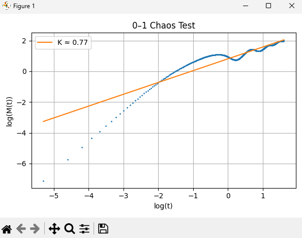
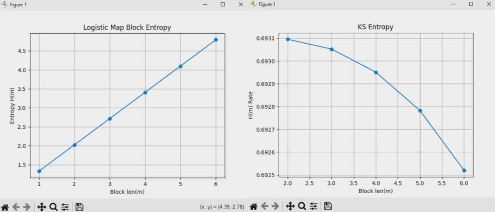

<!DOCTYPE html>
<html lang="en"><head>
  <meta charset="utf-8" />
  <meta name="viewport" content="width=device-width, initial-scale=1.0" />
  <meta name="robots" content="index, follow" />
  <link rel="icon shortcut" href="/favicon.ico" sizes="32x32" />
<link rel="icon" href="/favicon.svg" type="image/svg+xml" />
<link rel="icon" href="/favicon-dark.svg" type="image/svg+xml" media="(prefers-color-scheme: dark)" />
<link rel="icon" href="/favicon-16x16.png" type="image/png" sizes="16x16" />
<link rel="icon" href="/favicon-32x32.png" type="image/png" sizes="32x32" />
<link rel="apple-touch-icon" href="/apple-touch-icon.png" sizes="180x180" />
<link fetchpriority="low" href="/site.webmanifest" rel="manifest" />
<title>Creation your own Chaos System – yoshl - IT enjoyer</title>
  <meta name="description" content="Learn how to create your own chaos system, 1-Dimension, 2-Dimensions, 3, 4??? Here you will learn all you need to create a stable system. Maybe you want to avoid heuristic rules ;)" /><link rel="canonical" href="/blogs/cbe-creation/" itemprop="url" />

<meta property="og:title" content="Creation your own Chaos System" />
<meta property="og:description" content="Learn how to create your own chaos system, 1-Dimension, 2-Dimensions, 3, 4??? Here you will learn all you need to create a stable system. Maybe you want to avoid heuristic rules ;)" />
<meta property="og:type" content="article" />
<meta property="og:url" content="/blogs/cbe-creation/" /><meta property="article:section" content="blogs" />


  <meta itemprop="name" content="Creation your own Chaos System">
  <meta itemprop="description" content="Learn how to create your own chaos system, 1-Dimension, 2-Dimensions, 3, 4??? Here you will learn all you need to create a stable system. Maybe you want to avoid heuristic rules ;)">
  <meta itemprop="wordCount" content="3920">
  <meta name="twitter:card" content="summary">
  <meta name="twitter:title" content="Creation your own Chaos System">
  <meta name="twitter:description" content="Learn how to create your own chaos system, 1-Dimension, 2-Dimensions, 3, 4??? Here you will learn all you need to create a stable system. Maybe you want to avoid heuristic rules ;)">

    <link rel="preload" href="/css/compiled/main.min.e0bb0f28123bf084d555fc9253c6d2aa1443b2dfcde6044741a207eabdc3ddb8.css" as="style" integrity="sha256-4LsPKBI78ITVVfySU8bSqhRDst/N5gRHQaIH6r3D3bg=" />
    <link href="/css/compiled/main.min.e0bb0f28123bf084d555fc9253c6d2aa1443b2dfcde6044741a207eabdc3ddb8.css" rel="stylesheet" integrity="sha256-4LsPKBI78ITVVfySU8bSqhRDst/N5gRHQaIH6r3D3bg=" />


  <link href="/css/custom.min.e3b0c44298fc1c149afbf4c8996fb92427ae41e4649b934ca495991b7852b855.css" rel="stylesheet" integrity="sha256-47DEQpj8HBSa&#43;/TImW&#43;5JCeuQeRkm5NMpJWZG3hSuFU=" />


  <script>
     
    const defaultTheme = 'system';

    const setDarkTheme = () => {
      document.documentElement.classList.add("dark");
      document.documentElement.style.colorScheme = "dark";
    }
    const setLightTheme = () => {
      document.documentElement.classList.remove("dark");
      document.documentElement.style.colorScheme = "light";
    }

    if ("color-theme" in localStorage) {
      localStorage.getItem("color-theme") === "dark" ? setDarkTheme() : setLightTheme();
    } else {
      defaultTheme === "dark" ? setDarkTheme() : setLightTheme();
      if (defaultTheme === "system") {
        window.matchMedia("(prefers-color-scheme: dark)").matches ? setDarkTheme() : setLightTheme();
      }
    }
  </script>

  
</head>
<body dir="ltr"><div class="nav-container hx-sticky hx-top-0 hx-z-20 hx-w-full hx-bg-transparent print:hx-hidden">
  <div class="nav-container-blur hx-pointer-events-none hx-absolute hx-z-[-1] hx-h-full hx-w-full hx-bg-white dark:hx-bg-dark hx-shadow-[0_2px_4px_rgba(0,0,0,.02),0_1px_0_rgba(0,0,0,.06)] contrast-more:hx-shadow-[0_0_0_1px_#000] dark:hx-shadow-[0_-1px_0_rgba(255,255,255,.1)_inset] contrast-more:dark:hx-shadow-[0_0_0_1px_#fff]"></div>

  <nav class="hx-mx-auto hx-flex hx-items-center hx-justify-end hx-gap-2 hx-h-16 hx-px-6 hx-max-w-[90rem]">
    <a class="hx-flex hx-items-center hover:hx-opacity-75 ltr:hx-mr-auto rtl:hx-ml-auto" href="/">
        <span class="hx-mr-2 hx-font-extrabold hx-inline hx-select-none" title="yoshl - IT enjoyer">yoshl - IT enjoyer</span>
    </a><div class="search-wrapper hx-relative md:hx-w-64">
  <div class="hx-relative hx-flex hx-items-center hx-text-gray-900 contrast-more:hx-text-gray-800 dark:hx-text-gray-300 contrast-more:dark:hx-text-gray-300">
    <input
      placeholder="Search..."
      class="search-input hx-block hx-w-full hx-appearance-none hx-rounded-lg hx-px-3 hx-py-2 hx-transition-colors hx-text-base hx-leading-tight md:hx-text-sm hx-bg-black/[.05] dark:hx-bg-gray-50/10 focus:hx-bg-white dark:focus:hx-bg-dark placeholder:hx-text-gray-500 dark:placeholder:hx-text-gray-400 contrast-more:hx-border contrast-more:hx-border-current"
      type="search"
      value=""
      spellcheck="false"
    />
    <kbd
      class="hx-absolute hx-my-1.5 hx-select-none ltr:hx-right-1.5 rtl:hx-left-1.5 hx-h-5 hx-rounded hx-bg-white hx-px-1.5 hx-font-mono hx-text-[10px] hx-font-medium hx-text-gray-500 hx-border dark:hx-border-gray-100/20 dark:hx-bg-dark/50 contrast-more:hx-border-current contrast-more:hx-text-current contrast-more:dark:hx-border-current hx-items-center hx-gap-1 hx-transition-opacity hx-pointer-events-none hx-hidden sm:hx-flex"
    >
      CTRL K
    </kbd>
  </div>

  <div>
    <ul
      class="search-results hextra-scrollbar hx-hidden hx-border hx-border-gray-200 hx-bg-white hx-text-gray-100 dark:hx-border-neutral-800 dark:hx-bg-neutral-900 hx-absolute hx-top-full hx-z-20 hx-mt-2 hx-overflow-auto hx-overscroll-contain hx-rounded-xl hx-py-2.5 hx-shadow-xl hx-max-h-[min(calc(50vh-11rem-env(safe-area-inset-bottom)),400px)] md:hx-max-h-[min(calc(100vh-5rem-env(safe-area-inset-bottom)),400px)] hx-inset-x-0 ltr:md:hx-left-auto rtl:md:hx-right-auto contrast-more:hx-border contrast-more:hx-border-gray-900 contrast-more:dark:hx-border-gray-50 hx-w-screen hx-min-h-[100px] hx-max-w-[min(calc(100vw-2rem),calc(100%+20rem))]"
      style="transition: max-height 0.2s ease 0s;"
    ></ul>
  </div>
</div>
<button type="button" aria-label="Menu" class="hamburger-menu -hx-mr-2 hx-rounded hx-p-2 active:hx-bg-gray-400/20 md:hx-hidden"><svg height=24 fill="none" viewBox="0 0 24 24" stroke="currentColor"><g><path stroke-linecap="round" stroke-linejoin="round" stroke-width="2" d="M4 8H20"></path></g><g><path stroke-linecap="round" stroke-linejoin="round" stroke-width="2" d="M4 16H20"></path></g></svg></button>
  </nav>
</div>

  <div class='hx-mx-auto hx-flex max-w-full'>
    <div class="mobile-menu-overlay [transition:background-color_1.5s_ease] hx-fixed hx-inset-0 hx-z-10 hx-bg-black/80 dark:hx-bg-black/60 hx-hidden"></div>
<aside class="sidebar-container hx-flex hx-flex-col print:hx-hidden md:hx-top-16 md:hx-shrink-0 md:hx-w-64 md:hx-self-start max-md:[transform:translate3d(0,-100%,0)] md:hx-sticky">
  
  <div class="hx-px-4 hx-pt-4 md:hx-hidden">
    <div class="search-wrapper hx-relative md:hx-w-64">
  <div class="hx-relative hx-flex hx-items-center hx-text-gray-900 contrast-more:hx-text-gray-800 dark:hx-text-gray-300 contrast-more:dark:hx-text-gray-300">
    <input
      placeholder="Search..."
      class="search-input hx-block hx-w-full hx-appearance-none hx-rounded-lg hx-px-3 hx-py-2 hx-transition-colors hx-text-base hx-leading-tight md:hx-text-sm hx-bg-black/[.05] dark:hx-bg-gray-50/10 focus:hx-bg-white dark:focus:hx-bg-dark placeholder:hx-text-gray-500 dark:placeholder:hx-text-gray-400 contrast-more:hx-border contrast-more:hx-border-current"
      type="search"
      value=""
      spellcheck="false"
    />
    <kbd
      class="hx-absolute hx-my-1.5 hx-select-none ltr:hx-right-1.5 rtl:hx-left-1.5 hx-h-5 hx-rounded hx-bg-white hx-px-1.5 hx-font-mono hx-text-[10px] hx-font-medium hx-text-gray-500 hx-border dark:hx-border-gray-100/20 dark:hx-bg-dark/50 contrast-more:hx-border-current contrast-more:hx-text-current contrast-more:dark:hx-border-current hx-items-center hx-gap-1 hx-transition-opacity hx-pointer-events-none hx-hidden sm:hx-flex"
    >
      CTRL K
    </kbd>
  </div>

  <div>
    <ul
      class="search-results hextra-scrollbar hx-hidden hx-border hx-border-gray-200 hx-bg-white hx-text-gray-100 dark:hx-border-neutral-800 dark:hx-bg-neutral-900 hx-absolute hx-top-full hx-z-20 hx-mt-2 hx-overflow-auto hx-overscroll-contain hx-rounded-xl hx-py-2.5 hx-shadow-xl hx-max-h-[min(calc(50vh-11rem-env(safe-area-inset-bottom)),400px)] md:hx-max-h-[min(calc(100vh-5rem-env(safe-area-inset-bottom)),400px)] hx-inset-x-0 ltr:md:hx-left-auto rtl:md:hx-right-auto contrast-more:hx-border contrast-more:hx-border-gray-900 contrast-more:dark:hx-border-gray-50 hx-w-screen hx-min-h-[100px] hx-max-w-[min(calc(100vw-2rem),calc(100%+20rem))]"
      style="transition: max-height 0.2s ease 0s;"
    ></ul>
  </div>
</div>

  </div>
  <div class="hextra-scrollbar hx-overflow-y-auto hx-overflow-x-hidden hx-p-4 hx-grow md:hx-h-[calc(100vh-var(--navbar-height)-var(--menu-height))]">
    <ul class="hx-flex hx-flex-col hx-gap-1 md:hx-hidden">
      
      
          <li class="open"><a
    class="hx-flex hx-items-center hx-justify-between hx-gap-2 hx-cursor-pointer hx-rounded hx-px-2 hx-py-1.5 hx-text-sm hx-transition-colors [-webkit-tap-highlight-color:transparent] [-webkit-touch-callout:none] [word-break:break-word]
      hx-text-gray-500 hover:hx-bg-gray-100 hover:hx-text-gray-900 contrast-more:hx-border contrast-more:hx-border-transparent contrast-more:hx-text-gray-900 contrast-more:hover:hx-border-gray-900 dark:hx-text-neutral-400 dark:hover:hx-bg-primary-100/5 dark:hover:hx-text-gray-50 contrast-more:dark:hx-text-gray-50 contrast-more:dark:hover:hx-border-gray-50"
    href="/blogs/"
    
  >Chaos-Based-Encryption Saga
        <span class="hextra-sidebar-collapsible-button"><svg fill="none" viewBox="0 0 24 24" stroke="currentColor" class="hx-h-[18px] hx-min-w-[18px] hx-rounded-sm hx-p-0.5 hover:hx-bg-gray-800/5 dark:hover:hx-bg-gray-100/5"><path stroke-linecap="round" stroke-linejoin="round" stroke-width="2" d="M9 5l7 7-7 7" class="hx-origin-center hx-transition-transform rtl:-hx-rotate-180"></path></svg></span>
    </a><div class="ltr:hx-pr-0 hx-overflow-hidden">
        <ul class='hx-relative hx-flex hx-flex-col hx-gap-1 before:hx-absolute before:hx-inset-y-1 before:hx-w-px before:hx-bg-gray-200 before:hx-content-[""] ltr:hx-ml-3 ltr:hx-pl-3 ltr:before:hx-left-0 rtl:hx-mr-3 rtl:hx-pr-3 rtl:before:hx-right-0 dark:before:hx-bg-neutral-800'><li class="hx-flex hx-flex-col "><a
    class="hx-flex hx-items-center hx-justify-between hx-gap-2 hx-cursor-pointer hx-rounded hx-px-2 hx-py-1.5 hx-text-sm hx-transition-colors [-webkit-tap-highlight-color:transparent] [-webkit-touch-callout:none] [word-break:break-word]
      hx-text-gray-500 hover:hx-bg-gray-100 hover:hx-text-gray-900 contrast-more:hx-border contrast-more:hx-border-transparent contrast-more:hx-text-gray-900 contrast-more:hover:hx-border-gray-900 dark:hx-text-neutral-400 dark:hover:hx-bg-primary-100/5 dark:hover:hx-text-gray-50 contrast-more:dark:hx-text-gray-50 contrast-more:dark:hover:hx-border-gray-50"
    href="/blogs/cbe-fundamentals/"
    
  >Chaos Based Encryption applied to stegoanalysis
    </a>
              
            </li><li class="hx-flex hx-flex-col open"><a
    class="hx-flex hx-items-center hx-justify-between hx-gap-2 hx-cursor-pointer hx-rounded hx-px-2 hx-py-1.5 hx-text-sm hx-transition-colors [-webkit-tap-highlight-color:transparent] [-webkit-touch-callout:none] [word-break:break-word]
      sidebar-active-item hx-bg-primary-100 hx-font-semibold hx-text-primary-800 contrast-more:hx-border contrast-more:hx-border-primary-500 dark:hx-bg-primary-400/10 dark:hx-text-primary-600 contrast-more:dark:hx-border-primary-500"
    href="/blogs/cbe-creation/"
    
  >Creation your own Chaos System
    </a>
  
    <ul class='hx-flex hx-flex-col hx-gap-1 hx-relative before:hx-absolute before:hx-inset-y-1 before:hx-w-px before:hx-bg-gray-200 before:hx-content-[""] dark:before:hx-bg-neutral-800 ltr:hx-pl-3 ltr:before:hx-left-0 rtl:hx-pr-3 rtl:before:hx-right-0 ltr:hx-ml-3 rtl:hx-mr-3'><li>
              <a
                href="#getting-started"
                class="hx-flex hx-rounded hx-px-2 hx-py-1.5 hx-text-sm hx-transition-colors [word-break:break-word] hx-cursor-pointer [-webkit-tap-highlight-color:transparent] [-webkit-touch-callout:none] contrast-more:hx-border hx-gap-2 before:hx-opacity-25 before:hx-content-['#'] hx-text-gray-500 hover:hx-bg-gray-100 hover:hx-text-gray-900 dark:hx-text-neutral-400 dark:hover:hx-bg-primary-100/5 dark:hover:hx-text-gray-50 contrast-more:hx-text-gray-900 contrast-more:dark:hx-text-gray-50 contrast-more:hx-border-transparent contrast-more:hover:hx-border-gray-900 contrast-more:dark:hover:hx-border-gray-50"
              >Getting started</a>
            </li>
          <li>
              <a
                href="#aspects-to-consider"
                class="hx-flex hx-rounded hx-px-2 hx-py-1.5 hx-text-sm hx-transition-colors [word-break:break-word] hx-cursor-pointer [-webkit-tap-highlight-color:transparent] [-webkit-touch-callout:none] contrast-more:hx-border hx-gap-2 before:hx-opacity-25 before:hx-content-['#'] hx-text-gray-500 hover:hx-bg-gray-100 hover:hx-text-gray-900 dark:hx-text-neutral-400 dark:hover:hx-bg-primary-100/5 dark:hover:hx-text-gray-50 contrast-more:hx-text-gray-900 contrast-more:dark:hx-text-gray-50 contrast-more:hx-border-transparent contrast-more:hover:hx-border-gray-900 contrast-more:dark:hover:hx-border-gray-50"
              >Aspects to consider</a>
            </li>
          <li>
              <a
                href="#verifying-the-chaotic-system"
                class="hx-flex hx-rounded hx-px-2 hx-py-1.5 hx-text-sm hx-transition-colors [word-break:break-word] hx-cursor-pointer [-webkit-tap-highlight-color:transparent] [-webkit-touch-callout:none] contrast-more:hx-border hx-gap-2 before:hx-opacity-25 before:hx-content-['#'] hx-text-gray-500 hover:hx-bg-gray-100 hover:hx-text-gray-900 dark:hx-text-neutral-400 dark:hover:hx-bg-primary-100/5 dark:hover:hx-text-gray-50 contrast-more:hx-text-gray-900 contrast-more:dark:hx-text-gray-50 contrast-more:hx-border-transparent contrast-more:hover:hx-border-gray-900 contrast-more:dark:hover:hx-border-gray-50"
              >Verifying the Chaotic System</a>
            </li>
          <li>
              <a
                href="#diferencies-between-1d-and-3d"
                class="hx-flex hx-rounded hx-px-2 hx-py-1.5 hx-text-sm hx-transition-colors [word-break:break-word] hx-cursor-pointer [-webkit-tap-highlight-color:transparent] [-webkit-touch-callout:none] contrast-more:hx-border hx-gap-2 before:hx-opacity-25 before:hx-content-['#'] hx-text-gray-500 hover:hx-bg-gray-100 hover:hx-text-gray-900 dark:hx-text-neutral-400 dark:hover:hx-bg-primary-100/5 dark:hover:hx-text-gray-50 contrast-more:hx-text-gray-900 contrast-more:dark:hx-text-gray-50 contrast-more:hx-border-transparent contrast-more:hover:hx-border-gray-900 contrast-more:dark:hover:hx-border-gray-50"
              >Diferencies between 1D and 3D</a>
            </li>
          <li>
              <a
                href="#creating-chaotic-systems"
                class="hx-flex hx-rounded hx-px-2 hx-py-1.5 hx-text-sm hx-transition-colors [word-break:break-word] hx-cursor-pointer [-webkit-tap-highlight-color:transparent] [-webkit-touch-callout:none] contrast-more:hx-border hx-gap-2 before:hx-opacity-25 before:hx-content-['#'] hx-text-gray-500 hover:hx-bg-gray-100 hover:hx-text-gray-900 dark:hx-text-neutral-400 dark:hover:hx-bg-primary-100/5 dark:hover:hx-text-gray-50 contrast-more:hx-text-gray-900 contrast-more:dark:hx-text-gray-50 contrast-more:hx-border-transparent contrast-more:hover:hx-border-gray-900 contrast-more:dark:hover:hx-border-gray-50"
              >Creating Chaotic Systems</a>
            </li>
          <li>
              <a
                href="#conclusion"
                class="hx-flex hx-rounded hx-px-2 hx-py-1.5 hx-text-sm hx-transition-colors [word-break:break-word] hx-cursor-pointer [-webkit-tap-highlight-color:transparent] [-webkit-touch-callout:none] contrast-more:hx-border hx-gap-2 before:hx-opacity-25 before:hx-content-['#'] hx-text-gray-500 hover:hx-bg-gray-100 hover:hx-text-gray-900 dark:hx-text-neutral-400 dark:hover:hx-bg-primary-100/5 dark:hover:hx-text-gray-50 contrast-more:hx-text-gray-900 contrast-more:dark:hx-text-gray-50 contrast-more:hx-border-transparent contrast-more:hover:hx-border-gray-900 contrast-more:dark:hover:hx-border-gray-50"
              >Conclusion</a>
            </li>
          </ul>
  
              
            </li></ul>
      </div></li>
          <li class=""><a
    class="hx-flex hx-items-center hx-justify-between hx-gap-2 hx-cursor-pointer hx-rounded hx-px-2 hx-py-1.5 hx-text-sm hx-transition-colors [-webkit-tap-highlight-color:transparent] [-webkit-touch-callout:none] [word-break:break-word]
      hx-text-gray-500 hover:hx-bg-gray-100 hover:hx-text-gray-900 contrast-more:hx-border contrast-more:hx-border-transparent contrast-more:hx-text-gray-900 contrast-more:hover:hx-border-gray-900 dark:hx-text-neutral-400 dark:hover:hx-bg-primary-100/5 dark:hover:hx-text-gray-50 contrast-more:dark:hx-text-gray-50 contrast-more:dark:hover:hx-border-gray-50"
    href="/tjctf-2025/"
    
  >TJCTF 2025 | 7/8 Forensics challenges
    </a></li>
    </ul>

    <ul class="hx-flex hx-flex-col hx-gap-1 max-md:hx-hidden">
        
          <li class=""><a
    class="hx-flex hx-items-center hx-justify-between hx-gap-2 hx-cursor-pointer hx-rounded hx-px-2 hx-py-1.5 hx-text-sm hx-transition-colors [-webkit-tap-highlight-color:transparent] [-webkit-touch-callout:none] [word-break:break-word]
      hx-text-gray-500 hover:hx-bg-gray-100 hover:hx-text-gray-900 contrast-more:hx-border contrast-more:hx-border-transparent contrast-more:hx-text-gray-900 contrast-more:hover:hx-border-gray-900 dark:hx-text-neutral-400 dark:hover:hx-bg-primary-100/5 dark:hover:hx-text-gray-50 contrast-more:dark:hx-text-gray-50 contrast-more:dark:hover:hx-border-gray-50"
    href="/blogs/cbe-fundamentals/"
    
  >Chaos Based Encryption applied to stegoanalysis
    </a></li>
          <li class="open"><a
    class="hx-flex hx-items-center hx-justify-between hx-gap-2 hx-cursor-pointer hx-rounded hx-px-2 hx-py-1.5 hx-text-sm hx-transition-colors [-webkit-tap-highlight-color:transparent] [-webkit-touch-callout:none] [word-break:break-word]
      sidebar-active-item hx-bg-primary-100 hx-font-semibold hx-text-primary-800 contrast-more:hx-border contrast-more:hx-border-primary-500 dark:hx-bg-primary-400/10 dark:hx-text-primary-600 contrast-more:dark:hx-border-primary-500"
    href="/blogs/cbe-creation/"
    
  >Creation your own Chaos System
    </a></li>
        
      </ul>
    </div>
  
  
    <div class="  hx-sticky hx-bottom-0 hx-bg-white dark:hx-bg-dark hx-mx-4 hx-py-4 hx-shadow-[0_-12px_16px_#fff] hx-flex hx-items-center hx-gap-2 dark:hx-border-neutral-800 dark:hx-shadow-[0_-12px_16px_#111] contrast-more:hx-border-neutral-400 contrast-more:hx-shadow-none contrast-more:dark:hx-shadow-none hx-border-t" data-toggle-animation="show"><div class="hx-flex hx-grow hx-flex-col"><button
  title="Change theme"
  data-theme="light"
  class="theme-toggle hx-group hx-h-7 hx-rounded-md hx-px-2 hx-text-left hx-text-xs hx-font-medium hx-text-gray-600 hx-transition-colors dark:hx-text-gray-400 hover:hx-bg-gray-100 hover:hx-text-gray-900 dark:hover:hx-bg-primary-100/5 dark:hover:hx-text-gray-50"
  type="button"
  aria-label="Change theme"
>
  <div class="hx-flex hx-items-center hx-gap-2 hx-capitalize"><svg height=12 class="group-data-[theme=light]:hx-hidden" xmlns="http://www.w3.org/2000/svg" fill="none" viewBox="0 0 24 24" stroke-width="2" stroke="currentColor" aria-hidden="true"><path stroke-linecap="round" stroke-linejoin="round" d="M12 3v1m0 16v1m9-9h-1M4 12H3m15.364 6.364l-.707-.707M6.343 6.343l-.707-.707m12.728 0l-.707.707M6.343 17.657l-.707.707M16 12a4 4 0 11-8 0 4 4 0 018 0z"/></svg><span class="group-data-[theme=light]:hx-hidden">Light</span><svg height=12 class="group-data-[theme=dark]:hx-hidden" xmlns="http://www.w3.org/2000/svg" fill="none" viewBox="0 0 24 24" stroke-width="2" stroke="currentColor" aria-hidden="true"><path stroke-linecap="round" stroke-linejoin="round" d="M20.354 15.354A9 9 0 018.646 3.646 9.003 9.003 0 0012 21a9.003 9.003 0 008.354-5.646z"/></svg><span class="group-data-[theme=dark]:hx-hidden">Dark</span></div>
</button>
</div></div></aside>
    
<nav class="hextra-toc hx-order-last hx-hidden hx-w-64 hx-shrink-0 xl:hx-block print:hx-hidden hx-px-4" aria-label="table of contents">
    <div class="hextra-scrollbar hx-sticky hx-top-16 hx-overflow-y-auto hx-pr-4 hx-pt-6 hx-text-sm [hyphens:auto] hx-max-h-[calc(100vh-var(--navbar-height)-env(safe-area-inset-bottom))] ltr:hx--mr-4 rtl:hx--ml-4"><p class="hx-mb-4 hx-font-semibold hx-tracking-tight">On this page</p><ul>
      <li class="hx-my-2 hx-scroll-my-6 hx-scroll-py-6">
        <a class="hx-font-semibold hx-inline-block hx-text-gray-500 hover:hx-text-gray-900 dark:hx-text-gray-400 dark:hover:hx-text-gray-300 contrast-more:hx-text-gray-900 contrast-more:hx-underline contrast-more:dark:hx-text-gray-50 hx-w-full hx-break-words" href="#getting-started">Getting started
        </a>
      </li>
      <li class="hx-my-2 hx-scroll-my-6 hx-scroll-py-6">
        <a class="hx-font-semibold hx-inline-block hx-text-gray-500 hover:hx-text-gray-900 dark:hx-text-gray-400 dark:hover:hx-text-gray-300 contrast-more:hx-text-gray-900 contrast-more:hx-underline contrast-more:dark:hx-text-gray-50 hx-w-full hx-break-words" href="#aspects-to-consider">Aspects to consider
        </a>
      </li>
      <li class="hx-my-2 hx-scroll-my-6 hx-scroll-py-6">
        <a class="hx-font-semibold hx-inline-block hx-text-gray-500 hover:hx-text-gray-900 dark:hx-text-gray-400 dark:hover:hx-text-gray-300 contrast-more:hx-text-gray-900 contrast-more:hx-underline contrast-more:dark:hx-text-gray-50 hx-w-full hx-break-words" href="#verifying-the-chaotic-system">Verifying the Chaotic System
        </a>
      </li>
      <li class="hx-my-2 hx-scroll-my-6 hx-scroll-py-6">
        <a class="ltr:hx-pl-4 rtl:hx-pr-4 hx-inline-block hx-text-gray-500 hover:hx-text-gray-900 dark:hx-text-gray-400 dark:hover:hx-text-gray-300 contrast-more:hx-text-gray-900 contrast-more:hx-underline contrast-more:dark:hx-text-gray-50 hx-w-full hx-break-words" href="#lyapunov-exponent">Lyapunov Exponent
        </a>
      </li>
      <li class="hx-my-2 hx-scroll-my-6 hx-scroll-py-6">
        <a class="ltr:hx-pl-8 rtl:hx-pr-8 hx-inline-block hx-text-gray-500 hover:hx-text-gray-900 dark:hx-text-gray-400 dark:hover:hx-text-gray-300 contrast-more:hx-text-gray-900 contrast-more:hx-underline contrast-more:dark:hx-text-gray-50 hx-w-full hx-break-words" href="#definition">Definition
        </a>
      </li>
      <li class="hx-my-2 hx-scroll-my-6 hx-scroll-py-6">
        <a class="ltr:hx-pl-8 rtl:hx-pr-8 hx-inline-block hx-text-gray-500 hover:hx-text-gray-900 dark:hx-text-gray-400 dark:hover:hx-text-gray-300 contrast-more:hx-text-gray-900 contrast-more:hx-underline contrast-more:dark:hx-text-gray-50 hx-w-full hx-break-words" href="#how-it-works">How it works
        </a>
      </li>
      <li class="hx-my-2 hx-scroll-my-6 hx-scroll-py-6">
        <a class="ltr:hx-pl-8 rtl:hx-pr-8 hx-inline-block hx-text-gray-500 hover:hx-text-gray-900 dark:hx-text-gray-400 dark:hover:hx-text-gray-300 contrast-more:hx-text-gray-900 contrast-more:hx-underline contrast-more:dark:hx-text-gray-50 hx-w-full hx-break-words" href="#lyapunov-calculator-1d">Lyapunov calculator (1D)
        </a>
      </li>
      <li class="hx-my-2 hx-scroll-my-6 hx-scroll-py-6">
        <a class="ltr:hx-pl-8 rtl:hx-pr-8 hx-inline-block hx-text-gray-500 hover:hx-text-gray-900 dark:hx-text-gray-400 dark:hover:hx-text-gray-300 contrast-more:hx-text-gray-900 contrast-more:hx-underline contrast-more:dark:hx-text-gray-50 hx-w-full hx-break-words" href="#lyapunov-calculator-3d">Lyapunov calculator (3D)
        </a>
      </li>
      <li class="hx-my-2 hx-scroll-my-6 hx-scroll-py-6">
        <a class="ltr:hx-pl-4 rtl:hx-pr-4 hx-inline-block hx-text-gray-500 hover:hx-text-gray-900 dark:hx-text-gray-400 dark:hover:hx-text-gray-300 contrast-more:hx-text-gray-900 contrast-more:hx-underline contrast-more:dark:hx-text-gray-50 hx-w-full hx-break-words" href="#binary-test-1-0-test">Binary Test (1-0 Test)
        </a>
      </li>
      <li class="hx-my-2 hx-scroll-my-6 hx-scroll-py-6">
        <a class="ltr:hx-pl-8 rtl:hx-pr-8 hx-inline-block hx-text-gray-500 hover:hx-text-gray-900 dark:hx-text-gray-400 dark:hover:hx-text-gray-300 contrast-more:hx-text-gray-900 contrast-more:hx-underline contrast-more:dark:hx-text-gray-50 hx-w-full hx-break-words" href="#definition-1">Definition
        </a>
      </li>
      <li class="hx-my-2 hx-scroll-my-6 hx-scroll-py-6">
        <a class="ltr:hx-pl-8 rtl:hx-pr-8 hx-inline-block hx-text-gray-500 hover:hx-text-gray-900 dark:hx-text-gray-400 dark:hover:hx-text-gray-300 contrast-more:hx-text-gray-900 contrast-more:hx-underline contrast-more:dark:hx-text-gray-50 hx-w-full hx-break-words" href="#how-it-works-1">How it works
        </a>
      </li>
      <li class="hx-my-2 hx-scroll-my-6 hx-scroll-py-6">
        <a class="ltr:hx-pl-8 rtl:hx-pr-8 hx-inline-block hx-text-gray-500 hover:hx-text-gray-900 dark:hx-text-gray-400 dark:hover:hx-text-gray-300 contrast-more:hx-text-gray-900 contrast-more:hx-underline contrast-more:dark:hx-text-gray-50 hx-w-full hx-break-words" href="#1-0-test-calculator-3d">1-0 Test Calculator (3D)
        </a>
      </li>
      <li class="hx-my-2 hx-scroll-my-6 hx-scroll-py-6">
        <a class="ltr:hx-pl-8 rtl:hx-pr-8 hx-inline-block hx-text-gray-500 hover:hx-text-gray-900 dark:hx-text-gray-400 dark:hover:hx-text-gray-300 contrast-more:hx-text-gray-900 contrast-more:hx-underline contrast-more:dark:hx-text-gray-50 hx-w-full hx-break-words" href="#1-0-test-calculator-1d">1-0 Test Calculator (1D)
        </a>
      </li>
      <li class="hx-my-2 hx-scroll-my-6 hx-scroll-py-6">
        <a class="ltr:hx-pl-4 rtl:hx-pr-4 hx-inline-block hx-text-gray-500 hover:hx-text-gray-900 dark:hx-text-gray-400 dark:hover:hx-text-gray-300 contrast-more:hx-text-gray-900 contrast-more:hx-underline contrast-more:dark:hx-text-gray-50 hx-w-full hx-break-words" href="#kolmorogor-sinai">Kolmorogor Sinai
        </a>
      </li>
      <li class="hx-my-2 hx-scroll-my-6 hx-scroll-py-6">
        <a class="ltr:hx-pl-8 rtl:hx-pr-8 hx-inline-block hx-text-gray-500 hover:hx-text-gray-900 dark:hx-text-gray-400 dark:hover:hx-text-gray-300 contrast-more:hx-text-gray-900 contrast-more:hx-underline contrast-more:dark:hx-text-gray-50 hx-w-full hx-break-words" href="#definition-2">Definition
        </a>
      </li>
      <li class="hx-my-2 hx-scroll-my-6 hx-scroll-py-6">
        <a class="ltr:hx-pl-8 rtl:hx-pr-8 hx-inline-block hx-text-gray-500 hover:hx-text-gray-900 dark:hx-text-gray-400 dark:hover:hx-text-gray-300 contrast-more:hx-text-gray-900 contrast-more:hx-underline contrast-more:dark:hx-text-gray-50 hx-w-full hx-break-words" href="#how-it-works-2">How it works
        </a>
      </li>
      <li class="hx-my-2 hx-scroll-my-6 hx-scroll-py-6">
        <a class="ltr:hx-pl-8 rtl:hx-pr-8 hx-inline-block hx-text-gray-500 hover:hx-text-gray-900 dark:hx-text-gray-400 dark:hover:hx-text-gray-300 contrast-more:hx-text-gray-900 contrast-more:hx-underline contrast-more:dark:hx-text-gray-50 hx-w-full hx-break-words" href="#kolmorogor-calculator-1d">Kolmorogor Calculator (1D)
        </a>
      </li>
      <li class="hx-my-2 hx-scroll-my-6 hx-scroll-py-6">
        <a class="ltr:hx-pl-16 rtl:hx-pr-16 hx-inline-block hx-text-gray-500 hover:hx-text-gray-900 dark:hx-text-gray-400 dark:hover:hx-text-gray-300 contrast-more:hx-text-gray-900 contrast-more:hx-underline contrast-more:dark:hx-text-gray-50 hx-w-full hx-break-words" href="#extra-python-tip">Extra Python Tip
        </a>
      </li>
      <li class="hx-my-2 hx-scroll-my-6 hx-scroll-py-6">
        <a class="ltr:hx-pl-8 rtl:hx-pr-8 hx-inline-block hx-text-gray-500 hover:hx-text-gray-900 dark:hx-text-gray-400 dark:hover:hx-text-gray-300 contrast-more:hx-text-gray-900 contrast-more:hx-underline contrast-more:dark:hx-text-gray-50 hx-w-full hx-break-words" href="#kolmorogor-calculator-3d">Kolmorogor Calculator (3D)
        </a>
      </li>
      <li class="hx-my-2 hx-scroll-my-6 hx-scroll-py-6">
        <a class="ltr:hx-pl-16 rtl:hx-pr-16 hx-inline-block hx-text-gray-500 hover:hx-text-gray-900 dark:hx-text-gray-400 dark:hover:hx-text-gray-300 contrast-more:hx-text-gray-900 contrast-more:hx-underline contrast-more:dark:hx-text-gray-50 hx-w-full hx-break-words" href="#decorator-generate3dseries">Decorator: @generate3DSeries
        </a>
      </li>
      <li class="hx-my-2 hx-scroll-my-6 hx-scroll-py-6">
        <a class="hx-font-semibold hx-inline-block hx-text-gray-500 hover:hx-text-gray-900 dark:hx-text-gray-400 dark:hover:hx-text-gray-300 contrast-more:hx-text-gray-900 contrast-more:hx-underline contrast-more:dark:hx-text-gray-50 hx-w-full hx-break-words" href="#diferencies-between-1d-and-3d">Diferencies between 1D and 3D
        </a>
      </li>
      <li class="hx-my-2 hx-scroll-my-6 hx-scroll-py-6">
        <a class="hx-font-semibold hx-inline-block hx-text-gray-500 hover:hx-text-gray-900 dark:hx-text-gray-400 dark:hover:hx-text-gray-300 contrast-more:hx-text-gray-900 contrast-more:hx-underline contrast-more:dark:hx-text-gray-50 hx-w-full hx-break-words" href="#creating-chaotic-systems">Creating Chaotic Systems
        </a>
      </li>
      <li class="hx-my-2 hx-scroll-my-6 hx-scroll-py-6">
        <a class="ltr:hx-pl-4 rtl:hx-pr-4 hx-inline-block hx-text-gray-500 hover:hx-text-gray-900 dark:hx-text-gray-400 dark:hover:hx-text-gray-300 contrast-more:hx-text-gray-900 contrast-more:hx-underline contrast-more:dark:hx-text-gray-50 hx-w-full hx-break-words" href="#mathematics-used-in-cbe">Mathematics used in CBE
        </a>
      </li>
      <li class="hx-my-2 hx-scroll-my-6 hx-scroll-py-6">
        <a class="ltr:hx-pl-8 rtl:hx-pr-8 hx-inline-block hx-text-gray-500 hover:hx-text-gray-900 dark:hx-text-gray-400 dark:hover:hx-text-gray-300 contrast-more:hx-text-gray-900 contrast-more:hx-underline contrast-more:dark:hx-text-gray-50 hx-w-full hx-break-words" href="#arithmetic-functions">Arithmetic Functions
        </a>
      </li>
      <li class="hx-my-2 hx-scroll-my-6 hx-scroll-py-6">
        <a class="ltr:hx-pl-12 rtl:hx-pr-12 hx-inline-block hx-text-gray-500 hover:hx-text-gray-900 dark:hx-text-gray-400 dark:hover:hx-text-gray-300 contrast-more:hx-text-gray-900 contrast-more:hx-underline contrast-more:dark:hx-text-gray-50 hx-w-full hx-break-words" href="#logistic-map">Logistic map
        </a>
      </li>
      <li class="hx-my-2 hx-scroll-my-6 hx-scroll-py-6">
        <a class="ltr:hx-pl-12 rtl:hx-pr-12 hx-inline-block hx-text-gray-500 hover:hx-text-gray-900 dark:hx-text-gray-400 dark:hover:hx-text-gray-300 contrast-more:hx-text-gray-900 contrast-more:hx-underline contrast-more:dark:hx-text-gray-50 hx-w-full hx-break-words" href="#tent-map">Tent Map
        </a>
      </li>
      <li class="hx-my-2 hx-scroll-my-6 hx-scroll-py-6">
        <a class="ltr:hx-pl-8 rtl:hx-pr-8 hx-inline-block hx-text-gray-500 hover:hx-text-gray-900 dark:hx-text-gray-400 dark:hover:hx-text-gray-300 contrast-more:hx-text-gray-900 contrast-more:hx-underline contrast-more:dark:hx-text-gray-50 hx-w-full hx-break-words" href="#algebraic-functions">Algebraic functions
        </a>
      </li>
      <li class="hx-my-2 hx-scroll-my-6 hx-scroll-py-6">
        <a class="ltr:hx-pl-12 rtl:hx-pr-12 hx-inline-block hx-text-gray-500 hover:hx-text-gray-900 dark:hx-text-gray-400 dark:hover:hx-text-gray-300 contrast-more:hx-text-gray-900 contrast-more:hx-underline contrast-more:dark:hx-text-gray-50 hx-w-full hx-break-words" href="#zaslavsky-map-variant">Zaslavsky map variant
        </a>
      </li>
      <li class="hx-my-2 hx-scroll-my-6 hx-scroll-py-6">
        <a class="ltr:hx-pl-8 rtl:hx-pr-8 hx-inline-block hx-text-gray-500 hover:hx-text-gray-900 dark:hx-text-gray-400 dark:hover:hx-text-gray-300 contrast-more:hx-text-gray-900 contrast-more:hx-underline contrast-more:dark:hx-text-gray-50 hx-w-full hx-break-words" href="#transcendent-functions">Transcendent functions
        </a>
      </li>
      <li class="hx-my-2 hx-scroll-my-6 hx-scroll-py-6">
        <a class="ltr:hx-pl-12 rtl:hx-pr-12 hx-inline-block hx-text-gray-500 hover:hx-text-gray-900 dark:hx-text-gray-400 dark:hover:hx-text-gray-300 contrast-more:hx-text-gray-900 contrast-more:hx-underline contrast-more:dark:hx-text-gray-50 hx-w-full hx-break-words" href="#trigonometric-functions">Trigonometric functions
        </a>
      </li>
      <li class="hx-my-2 hx-scroll-my-6 hx-scroll-py-6">
        <a class="ltr:hx-pl-16 rtl:hx-pr-16 hx-inline-block hx-text-gray-500 hover:hx-text-gray-900 dark:hx-text-gray-400 dark:hover:hx-text-gray-300 contrast-more:hx-text-gray-900 contrast-more:hx-underline contrast-more:dark:hx-text-gray-50 hx-w-full hx-break-words" href="#henon-sine-map-2d-hsm">Henon-Sine Map (2D-HSM)
        </a>
      </li>
      <li class="hx-my-2 hx-scroll-my-6 hx-scroll-py-6">
        <a class="ltr:hx-pl-16 rtl:hx-pr-16 hx-inline-block hx-text-gray-500 hover:hx-text-gray-900 dark:hx-text-gray-400 dark:hover:hx-text-gray-300 contrast-more:hx-text-gray-900 contrast-more:hx-underline contrast-more:dark:hx-text-gray-50 hx-w-full hx-break-words" href="#logistic-sine-cosine-lsc-map">Logistic-sine-cosine (LSC) map
        </a>
      </li>
      <li class="hx-my-2 hx-scroll-my-6 hx-scroll-py-6">
        <a class="ltr:hx-pl-12 rtl:hx-pr-12 hx-inline-block hx-text-gray-500 hover:hx-text-gray-900 dark:hx-text-gray-400 dark:hover:hx-text-gray-300 contrast-more:hx-text-gray-900 contrast-more:hx-underline contrast-more:dark:hx-text-gray-50 hx-w-full hx-break-words" href="#logarithmic-functions">Logarithmic functions
        </a>
      </li>
      <li class="hx-my-2 hx-scroll-my-6 hx-scroll-py-6">
        <a class="ltr:hx-pl-16 rtl:hx-pr-16 hx-inline-block hx-text-gray-500 hover:hx-text-gray-900 dark:hx-text-gray-400 dark:hover:hx-text-gray-300 contrast-more:hx-text-gray-900 contrast-more:hx-underline contrast-more:dark:hx-text-gray-50 hx-w-full hx-break-words" href="#logistic--log">Logistic &#43; Log
        </a>
      </li>
      <li class="hx-my-2 hx-scroll-my-6 hx-scroll-py-6">
        <a class="ltr:hx-pl-12 rtl:hx-pr-12 hx-inline-block hx-text-gray-500 hover:hx-text-gray-900 dark:hx-text-gray-400 dark:hover:hx-text-gray-300 contrast-more:hx-text-gray-900 contrast-more:hx-underline contrast-more:dark:hx-text-gray-50 hx-w-full hx-break-words" href="#exponential-functions">Exponential functions
        </a>
      </li>
      <li class="hx-my-2 hx-scroll-my-6 hx-scroll-py-6">
        <a class="ltr:hx-pl-16 rtl:hx-pr-16 hx-inline-block hx-text-gray-500 hover:hx-text-gray-900 dark:hx-text-gray-400 dark:hover:hx-text-gray-300 contrast-more:hx-text-gray-900 contrast-more:hx-underline contrast-more:dark:hx-text-gray-50 hx-w-full hx-break-words" href="#1d-sine-powered-chaotic-map-1dsp">1D Sine-powered chaotic map (1DSP)
        </a>
      </li>
      <li class="hx-my-2 hx-scroll-my-6 hx-scroll-py-6">
        <a class="hx-font-semibold hx-inline-block hx-text-gray-500 hover:hx-text-gray-900 dark:hx-text-gray-400 dark:hover:hx-text-gray-300 contrast-more:hx-text-gray-900 contrast-more:hx-underline contrast-more:dark:hx-text-gray-50 hx-w-full hx-break-words" href="#conclusion">Conclusion
        </a>
      </li></ul>
      <div class="hx-mt-8 hx-border-t hx-bg-white hx-pt-8 hx-shadow-[0_-12px_16px_white] dark:hx-bg-dark dark:hx-shadow-[0_-12px_16px_#111] hx-sticky hx-bottom-0 hx-flex hx-flex-col hx-items-start hx-gap-2 hx-pb-8 dark:hx-border-neutral-800 contrast-more:hx-border-t contrast-more:hx-border-neutral-400 contrast-more:hx-shadow-none contrast-more:dark:hx-border-neutral-400">
        <button aria-hidden="true" id="backToTop" onClick="scrollUp();" class="hx-transition-all hx-duration-75 hx-opacity-0 hx-text-xs hx-font-medium hx-text-gray-500 hover:hx-text-gray-900 dark:hx-text-gray-400 dark:hover:hx-text-gray-100 contrast-more:hx-text-gray-800 contrast-more:dark:hx-text-gray-50">
          <span>Scroll to top</span>
          <svg xmlns="http://www.w3.org/2000/svg" fill="none" viewBox="0 0 24 24" stroke-width="1.5" stroke="currentColor" class="hx-inline ltr:hx-ml-1 rtl:hx-mr-1 hx-h-3.5 hx-w-3.5 hx-border hx-rounded-full hx-border-gray-500 hover:hx-border-gray-900 dark:hx-border-gray-400 dark:hover:hx-border-gray-100 contrast-more:hx-border-gray-800 contrast-more:dark:hx-border-gray-50">
            <path stroke-linecap="round" stroke-linejoin="round" d="M4.5 15.75l7.5-7.5 7.5 7.5" />
          </svg>
        </button>
      </div>
    </div>
  </nav>


    <article class="hx-w-full hx-break-words hx-flex hx-min-h-[calc(100vh-var(--navbar-height))] hx-min-w-0 hx-justify-center hx-pb-8 hx-pr-[calc(env(safe-area-inset-right)-1.5rem)]">
      <main class="hx-w-full hx-min-w-0 hx-max-w-6xl hx-px-6 hx-pt-4 md:hx-px-12">
        
  <div class="hx-mt-1.5 hx-flex hx-items-center hx-gap-1 hx-overflow-hidden hx-text-sm hx-text-gray-500 dark:hx-text-gray-400 contrast-more:hx-text-current">
        <div class="hx-whitespace-nowrap hx-transition-colors hx-min-w-[24px] hx-overflow-hidden hx-text-ellipsis hover:hx-text-gray-900 dark:hover:hx-text-gray-100">
          <a href="/blogs/">Chaos-Based-Encryption Saga</a>
        </div><svg class="hx-w-3.5 hx-shrink-0 rtl:-hx-rotate-180" xmlns="http://www.w3.org/2000/svg" fill="none" viewBox="0 0 24 24" stroke-width="2" stroke="currentColor" aria-hidden="true"><path stroke-linecap="round" stroke-linejoin="round" d="M9 5l7 7-7 7"/></svg><div class="hx-whitespace-nowrap hx-transition-colors hx-font-medium hx-text-gray-700 contrast-more:hx-font-bold contrast-more:hx-text-current dark:hx-text-gray-100 contrast-more:dark:hx-text-current">Creation your own Chaos System</div>
  </div>

        <div class="content">
          <h1>Creation your own Chaos System</h1>
          <h2>Getting started<span class="hx-absolute -hx-mt-20" id="getting-started"></span>
    <a href="#getting-started" class="subheading-anchor" aria-label="Permalink for this section"></a></h2><p>Welcome back! If you are reading this is because you liked the post: <em>Chaos Based Encryption applied to stegoanalysis</em>, although maybe it is more CBE Fundamentals haha, in any case before starting with this post I recommend you to take a look at the previous one to learn more about the concepts discussed.</p>
<p>n this little work you will learn how to create your own <em>cbe system</em> by applying some formula checks &ndash; like the <em>Lyapunov exponent</em> discussed in the first part &ndash; with a total of 3 checks, plus we will name some other proofs but they will not be deepened in this post.</p>
<h2>Aspects to consider<span class="hx-absolute -hx-mt-20" id="aspects-to-consider"></span>
    <a href="#aspects-to-consider" class="subheading-anchor" aria-label="Permalink for this section"></a></h2><p>For a chaotic system to be considered secure, it has to pass certain tests and requirements. First of all, here the 3 first tests we will deep in:</p>
<ol>
<li>Lyapunov Exponent</li>
<li>Binary Tests (1-0 Test)</li>
<li>Kolmogorov-Sinai</li>
</ol>
<p>Then, we will talk about what mathemathics functions is recommendable to use and real examples of CBEs. Finally, the comparison between the dimensions of the system, the number of unknowns, will be discussed, having pros and cons each of them.</p>
<h2>Verifying the Chaotic System<span class="hx-absolute -hx-mt-20" id="verifying-the-chaotic-system"></span>
    <a href="#verifying-the-chaotic-system" class="subheading-anchor" aria-label="Permalink for this section"></a></h2><h3>Lyapunov Exponent<span class="hx-absolute -hx-mt-20" id="lyapunov-exponent"></span>
    <a href="#lyapunov-exponent" class="subheading-anchor" aria-label="Permalink for this section"></a></h3><h4>Definition<span class="hx-absolute -hx-mt-20" id="definition"></span>
    <a href="#definition" class="subheading-anchor" aria-label="Permalink for this section"></a></h4><p>From <a href="https://www.sciencedirect.com/topics/physics-and-astronomy/lyapunov-exponent" target="_blank" rel="noopener">ScienceDirect</a>:</p>
<blockquote>
  <p>A Lyapunov exponent is a measure of the chaotic nature of a system&rsquo;s dynamics, indicating the divergence of nearby trajectories. It is computed using a practical formula that considers the time step and the distance between trajectories at different times.</p>
</blockquote>
<p>From <a href="http://crossgroup.caltech.edu/Chaos_Course/Lesson7/Lyapunov.pdf" target="_blank" rel="noopener">California Institute of Technology</a>:</p>
<blockquote>
  <p>Lyapunov exponents tell us the rate of divergence of nearby trajectories—a key
component of chaotic dynamics.</p>
</blockquote>
<p>From <a href="https://legacy-www.math.harvard.edu/archive/118r_spring_05/handouts/lyapunov.pdf" target="_blank" rel="noopener">Harvard Mathematics Department</a>:</p>
<blockquote>
  <p>The Lyapunov exponent is a quantitative number which indicates the sensitive dependence on initial conditions. It measures the exponential rate at which errors grow. If the Lyapunov exponent is log |c| then you can expect an error cn after n iterations, if  was the initial error.</p>
</blockquote>
<h4>How it works<span class="hx-absolute -hx-mt-20" id="how-it-works"></span>
    <a href="#how-it-works" class="subheading-anchor" aria-label="Permalink for this section"></a></h4><p>Mathematically the lyapunov exponent is defined as</p>
<p>$$
\lambda = \lim_{ t \to \infty } \frac{1}{t} \ln\left( \frac{\delta x(t)}{\delta x(0)} \right)
$$</p>
<p>mainly for 1 dimensional (1D onwards) systems, being $\delta x(t) = |x&rsquo;(t) - x(t)|$.</p>
<p>The exponent measure the rate of divergence of trajectories on an attractor. Consider a flow $\vec{\phi}(t)$ in pahse space, given by
$$
\frac{d\vec{\phi}}{dt} = \vec{F}(\vec{\phi})
$$</p>
<p>If instead of initiating the flow at $\vec{\phi}(0)$, it is initiated at $\vec{\phi}(0)+\epsilon (0)$, where $\epsilon$ is a differentiant in power -6 or lower, sensitivity to initial conditions would produce a divergent trajectory, as mentioned in <em>Chaos Based Encryption applied to stegoanalysis</em>. $_{https://ocw.mit.edu/courses/12-006j-nonlinear-dynamics-chaos-fall-2022/mit12_006jf22_lec24.pdf}$</p>
<p>The lyapunov exponent can be <em>time-independent Jacobian</em>, <em>time-dependent eigenvalues</em> but we are talking about how to create a chaotic system not about the lyapunov variantions.</p>
<blockquote>
  <p>If you are reading this in a future, <a href="Its_not_the_future_now" >here</a> you have a more detailed paper about the lyapunov exponent.</p>
</blockquote>
<h4>Lyapunov calculator (1D)<span class="hx-absolute -hx-mt-20" id="lyapunov-calculator-1d"></span>
    <a href="#lyapunov-calculator-1d" class="subheading-anchor" aria-label="Permalink for this section"></a></h4><p>With <code>numpy</code> python module is very easy to calculate this exponent&hellip; computing the average logarithmic rate of divergence between two trajectories of the system in base a sumatory. For each iteration, the separation is rescaled to remain close to $\epsilon$, preserving numerical stability.</p>
<div class="hextra-code-block hx-relative hx-mt-6 first:hx-mt-0 hx-group/code">

<div><div class="highlight"><pre tabindex="0" class="chroma"><code class="language-python" data-lang="python"><span class="line"><span class="cl"><span class="k">def</span> <span class="nf">lyapunov</span><span class="p">(</span><span class="n">mapFunction</span><span class="p">,</span> <span class="n">x0</span><span class="p">,</span> <span class="n">eps</span><span class="p">,</span> <span class="n">idx</span><span class="p">,</span> <span class="n">discard</span><span class="o">=</span><span class="mi">100</span><span class="p">):</span>
</span></span><span class="line"><span class="cl">    <span class="n">x</span><span class="o">=</span><span class="n">x0</span>
</span></span><span class="line"><span class="cl">    <span class="n">xPert</span> <span class="o">=</span> <span class="n">x0</span> <span class="o">+</span> <span class="n">eps</span>
</span></span><span class="line"><span class="cl">    <span class="n">lyap</span> <span class="o">=</span> <span class="mf">0.0</span>
</span></span><span class="line"><span class="cl">
</span></span><span class="line"><span class="cl">    <span class="k">for</span> <span class="n">i</span> <span class="ow">in</span> <span class="nb">range</span><span class="p">(</span><span class="n">idx</span><span class="p">):</span>
</span></span><span class="line"><span class="cl">        <span class="n">x</span> <span class="o">=</span> <span class="n">mapFunction</span><span class="p">(</span><span class="n">x</span><span class="p">)</span>
</span></span><span class="line"><span class="cl">        <span class="n">xPert</span> <span class="o">=</span>  <span class="n">mapFunction</span><span class="p">(</span><span class="n">xPert</span><span class="p">)</span>
</span></span><span class="line"><span class="cl">
</span></span><span class="line"><span class="cl">        <span class="n">delta</span> <span class="o">=</span> <span class="nb">abs</span><span class="p">(</span><span class="n">xPert</span> <span class="o">-</span> <span class="n">x</span><span class="p">)</span>
</span></span><span class="line"><span class="cl">        <span class="n">xPert</span> <span class="o">=</span> <span class="n">x</span> <span class="o">+</span> <span class="n">eps</span> <span class="o">*</span> <span class="p">(</span><span class="n">xPert</span> <span class="o">-</span> <span class="n">x</span><span class="p">)</span> <span class="o">/</span> <span class="n">delta</span> 
</span></span><span class="line"><span class="cl">
</span></span><span class="line"><span class="cl">        <span class="k">if</span> <span class="n">i</span> <span class="o">&gt;=</span> <span class="n">discard</span><span class="p">:</span>
</span></span><span class="line"><span class="cl">            <span class="n">lyap</span> <span class="o">+=</span> <span class="n">np</span><span class="o">.</span><span class="n">log</span><span class="p">(</span><span class="n">delta</span> <span class="o">/</span> <span class="n">eps</span><span class="p">)</span>
</span></span><span class="line"><span class="cl">    <span class="n">ei</span> <span class="o">=</span>  <span class="n">idx</span> <span class="o">-</span> <span class="n">discard</span>
</span></span><span class="line"><span class="cl">    <span class="k">return</span> <span class="p">(</span><span class="n">lyap</span> <span class="o">/</span> <span class="n">ei</span><span class="p">)</span></span></span></code></pre></div></div><div class="hextra-code-copy-btn-container hx-opacity-0 hx-transition group-hover/code:hx-opacity-100 hx-flex hx-gap-1 hx-absolute hx-m-[11px] hx-right-0 hx-top-0">
  <button
    class="hextra-code-copy-btn hx-group/copybtn hx-transition-all active:hx-opacity-50 hx-bg-primary-700/5 hx-border hx-border-black/5 hx-text-gray-600 hover:hx-text-gray-900 hx-rounded-md hx-p-1.5 dark:hx-bg-primary-300/10 dark:hx-border-white/10 dark:hx-text-gray-400 dark:hover:hx-text-gray-50"
    title="Copy code"
  >
    <div class="copy-icon group-[.copied]/copybtn:hx-hidden hx-pointer-events-none hx-h-4 hx-w-4"></div>
    <div class="success-icon hx-hidden group-[.copied]/copybtn:hx-block hx-pointer-events-none hx-h-4 hx-w-4"></div>
  </button>
</div>
</div>
<p>Later, when we finish explaining all tests and you create your system, I will teach you how to use this code, anyways, here a brief example:</p>
<div class="hextra-code-block hx-relative hx-mt-6 first:hx-mt-0 hx-group/code">

<div><div class="highlight"><pre tabindex="0" class="chroma"><code class="language-python" data-lang="python"><span class="line"><span class="cl"><span class="k">def</span> <span class="nf">system</span><span class="p">(</span><span class="n">k</span><span class="p">):</span>
</span></span><span class="line"><span class="cl">    <span class="k">return</span> <span class="k">lambda</span> <span class="n">x</span><span class="p">:</span> <span class="n">k</span> <span class="o">*</span> <span class="n">x</span> <span class="o">*</span> <span class="p">(</span><span class="mi">1</span> <span class="o">-</span> <span class="n">x</span><span class="p">)</span>
</span></span><span class="line"><span class="cl">
</span></span><span class="line"><span class="cl"><span class="n">logistic_map</span> <span class="o">=</span> <span class="n">system</span><span class="p">(</span><span class="mf">4.0</span><span class="p">)</span>
</span></span><span class="line"><span class="cl"><span class="n">lyap1</span> <span class="o">=</span> <span class="n">lyapunov</span><span class="p">(</span><span class="n">logistic_map</span><span class="p">,</span> <span class="n">x0</span><span class="o">=</span><span class="mf">0.2</span><span class="p">,</span> <span class="n">eps</span><span class="o">=</span><span class="mf">1e-8</span><span class="p">,</span> <span class="n">idx</span><span class="o">=</span><span class="mi">10000</span><span class="p">)</span></span></span></code></pre></div></div><div class="hextra-code-copy-btn-container hx-opacity-0 hx-transition group-hover/code:hx-opacity-100 hx-flex hx-gap-1 hx-absolute hx-m-[11px] hx-right-0 hx-top-0">
  <button
    class="hextra-code-copy-btn hx-group/copybtn hx-transition-all active:hx-opacity-50 hx-bg-primary-700/5 hx-border hx-border-black/5 hx-text-gray-600 hover:hx-text-gray-900 hx-rounded-md hx-p-1.5 dark:hx-bg-primary-300/10 dark:hx-border-white/10 dark:hx-text-gray-400 dark:hover:hx-text-gray-50"
    title="Copy code"
  >
    <div class="copy-icon group-[.copied]/copybtn:hx-hidden hx-pointer-events-none hx-h-4 hx-w-4"></div>
    <div class="success-icon hx-hidden group-[.copied]/copybtn:hx-block hx-pointer-events-none hx-h-4 hx-w-4"></div>
  </button>
</div>
</div>
<h4>Lyapunov calculator (3D)<span class="hx-absolute -hx-mt-20" id="lyapunov-calculator-3d"></span>
    <a href="#lyapunov-calculator-3d" class="subheading-anchor" aria-label="Permalink for this section"></a></h4><p>Don&rsquo;t worry about this, is only to set the code, in a future we will discuss diferences between dimensions in a chaotic system. In my case I work on 1D or 3D, you can adopt this code to another number of variables.</p>
<div class="hextra-code-block hx-relative hx-mt-6 first:hx-mt-0 hx-group/code">

<div><div class="highlight"><pre tabindex="0" class="chroma"><code class="language-python" data-lang="python"><span class="line"><span class="cl"><span class="c1"># Typing</span>
</span></span><span class="line"><span class="cl"><span class="n">ArrayLike3</span> <span class="o">=</span> <span class="n">Sequence</span><span class="p">[</span><span class="n">Union</span><span class="p">[</span><span class="nb">int</span><span class="p">,</span> <span class="nb">float</span><span class="p">]]</span>
</span></span><span class="line"><span class="cl"><span class="n">MapFunc</span> <span class="o">=</span> <span class="n">Callable</span><span class="p">[[</span><span class="n">ArrayLike3</span><span class="p">],</span> <span class="n">Sequence</span><span class="p">[</span><span class="n">Union</span><span class="p">[</span><span class="nb">int</span><span class="p">,</span> <span class="nb">float</span><span class="p">]]]</span>
</span></span><span class="line"><span class="cl"><span class="n">NormalizeFunc</span> <span class="o">=</span> <span class="n">Callable</span><span class="p">[[</span><span class="n">np</span><span class="o">.</span><span class="n">ndarray</span><span class="p">],</span> <span class="n">np</span><span class="o">.</span><span class="n">ndarray</span><span class="p">]</span>
</span></span><span class="line"><span class="cl">
</span></span><span class="line"><span class="cl"><span class="k">def</span> <span class="nf">lyapunov_3d</span><span class="p">(</span>
</span></span><span class="line"><span class="cl">    <span class="n">map_function</span><span class="p">:</span> <span class="n">MapFunc</span><span class="p">,</span>
</span></span><span class="line"><span class="cl">    <span class="n">x0</span><span class="p">:</span> <span class="n">ArrayLike3</span><span class="p">,</span>
</span></span><span class="line"><span class="cl">    <span class="n">eps</span><span class="p">:</span> <span class="nb">float</span> <span class="o">=</span> <span class="mf">1e-8</span><span class="p">,</span>
</span></span><span class="line"><span class="cl">    <span class="n">idx</span><span class="p">:</span> <span class="nb">int</span> <span class="o">=</span> <span class="mi">10000</span><span class="p">,</span>
</span></span><span class="line"><span class="cl">    <span class="n">discard</span><span class="p">:</span> <span class="nb">int</span> <span class="o">=</span> <span class="mi">100</span><span class="p">,</span>
</span></span><span class="line"><span class="cl">    <span class="n">normalize</span><span class="p">:</span> <span class="n">NormalizeFunc</span> <span class="o">=</span> <span class="k">lambda</span> <span class="n">v</span><span class="p">:</span> <span class="n">v</span>
</span></span><span class="line"><span class="cl"><span class="p">)</span> <span class="o">-&gt;</span> <span class="nb">float</span><span class="p">:</span>
</span></span><span class="line"><span class="cl">
</span></span><span class="line"><span class="cl">    <span class="n">x</span> <span class="o">=</span> <span class="n">np</span><span class="o">.</span><span class="n">array</span><span class="p">(</span><span class="n">x0</span><span class="p">,</span> <span class="n">dtype</span><span class="o">=</span><span class="n">np</span><span class="o">.</span><span class="n">float64</span><span class="p">)</span>
</span></span><span class="line"><span class="cl">
</span></span><span class="line"><span class="cl">    <span class="n">rng</span> <span class="o">=</span> <span class="n">np</span><span class="o">.</span><span class="n">random</span><span class="o">.</span><span class="n">default_rng</span><span class="p">()</span>
</span></span><span class="line"><span class="cl">    <span class="n">delta</span> <span class="o">=</span> <span class="n">rng</span><span class="o">.</span><span class="n">normal</span><span class="p">(</span><span class="n">size</span><span class="o">=</span><span class="mi">3</span><span class="p">)</span>
</span></span><span class="line"><span class="cl">    <span class="n">delta</span> <span class="o">*=</span> <span class="n">eps</span> <span class="o">/</span> <span class="n">np</span><span class="o">.</span><span class="n">linalg</span><span class="o">.</span><span class="n">norm</span><span class="p">(</span><span class="n">delta</span><span class="p">)</span>
</span></span><span class="line"><span class="cl">    <span class="n">x_pert</span> <span class="o">=</span> <span class="n">x</span> <span class="o">+</span> <span class="n">delta</span>
</span></span><span class="line"><span class="cl">
</span></span><span class="line"><span class="cl">    <span class="n">lyap_sum</span> <span class="o">=</span> <span class="mf">0.0</span>
</span></span><span class="line"><span class="cl">    <span class="k">for</span> <span class="n">i</span> <span class="ow">in</span> <span class="nb">range</span><span class="p">(</span><span class="n">idx</span><span class="p">):</span>
</span></span><span class="line"><span class="cl">        <span class="c1"># CORREGIDO: llamada sin &#39;*&#39;</span>
</span></span><span class="line"><span class="cl">        <span class="n">x_next</span> <span class="o">=</span> <span class="n">normalize</span><span class="p">(</span><span class="n">np</span><span class="o">.</span><span class="n">array</span><span class="p">(</span><span class="n">map_function</span><span class="p">(</span><span class="n">x</span><span class="p">),</span> <span class="n">dtype</span><span class="o">=</span><span class="n">np</span><span class="o">.</span><span class="n">float64</span><span class="p">))</span>
</span></span><span class="line"><span class="cl">        <span class="n">x_pert_next</span> <span class="o">=</span> <span class="n">normalize</span><span class="p">(</span><span class="n">np</span><span class="o">.</span><span class="n">array</span><span class="p">(</span><span class="n">map_function</span><span class="p">(</span><span class="n">x_pert</span><span class="p">),</span> <span class="n">dtype</span><span class="o">=</span><span class="n">np</span><span class="o">.</span><span class="n">float64</span><span class="p">))</span>
</span></span><span class="line"><span class="cl">
</span></span><span class="line"><span class="cl">        <span class="n">diff</span> <span class="o">=</span> <span class="n">x_pert_next</span> <span class="o">-</span> <span class="n">x_next</span>
</span></span><span class="line"><span class="cl">        <span class="n">dist</span> <span class="o">=</span> <span class="n">np</span><span class="o">.</span><span class="n">linalg</span><span class="o">.</span><span class="n">norm</span><span class="p">(</span><span class="n">diff</span><span class="p">)</span>
</span></span><span class="line"><span class="cl">
</span></span><span class="line"><span class="cl">        <span class="k">if</span> <span class="n">dist</span> <span class="o">==</span> <span class="mi">0</span><span class="p">:</span>
</span></span><span class="line"><span class="cl">            <span class="n">diff</span> <span class="o">=</span> <span class="n">rng</span><span class="o">.</span><span class="n">uniform</span><span class="p">(</span><span class="o">-</span><span class="n">eps</span><span class="p">,</span> <span class="n">eps</span><span class="p">,</span> <span class="n">size</span><span class="o">=</span><span class="mi">3</span><span class="p">)</span>
</span></span><span class="line"><span class="cl">            <span class="n">dist</span> <span class="o">=</span> <span class="n">np</span><span class="o">.</span><span class="n">linalg</span><span class="o">.</span><span class="n">norm</span><span class="p">(</span><span class="n">diff</span><span class="p">)</span>
</span></span><span class="line"><span class="cl">
</span></span><span class="line"><span class="cl">        <span class="n">diff</span> <span class="o">*=</span> <span class="p">(</span><span class="n">eps</span> <span class="o">/</span> <span class="n">dist</span><span class="p">)</span>
</span></span><span class="line"><span class="cl">        <span class="n">x_pert</span> <span class="o">=</span> <span class="n">x_next</span> <span class="o">+</span> <span class="n">diff</span>
</span></span><span class="line"><span class="cl">        <span class="n">x</span> <span class="o">=</span> <span class="n">x_next</span>
</span></span><span class="line"><span class="cl">
</span></span><span class="line"><span class="cl">        <span class="k">if</span> <span class="n">i</span> <span class="o">&gt;=</span> <span class="n">discard</span><span class="p">:</span>
</span></span><span class="line"><span class="cl">            <span class="n">lyap_sum</span> <span class="o">+=</span> <span class="n">np</span><span class="o">.</span><span class="n">log</span><span class="p">(</span><span class="n">dist</span> <span class="o">/</span> <span class="n">eps</span><span class="p">)</span>
</span></span><span class="line"><span class="cl">
</span></span><span class="line"><span class="cl">    <span class="k">return</span> <span class="n">lyap_sum</span> <span class="o">/</span> <span class="nb">max</span><span class="p">(</span><span class="mi">1</span><span class="p">,</span> <span class="p">(</span><span class="n">idx</span> <span class="o">-</span> <span class="n">discard</span><span class="p">))</span></span></span></code></pre></div></div><div class="hextra-code-copy-btn-container hx-opacity-0 hx-transition group-hover/code:hx-opacity-100 hx-flex hx-gap-1 hx-absolute hx-m-[11px] hx-right-0 hx-top-0">
  <button
    class="hextra-code-copy-btn hx-group/copybtn hx-transition-all active:hx-opacity-50 hx-bg-primary-700/5 hx-border hx-border-black/5 hx-text-gray-600 hover:hx-text-gray-900 hx-rounded-md hx-p-1.5 dark:hx-bg-primary-300/10 dark:hx-border-white/10 dark:hx-text-gray-400 dark:hover:hx-text-gray-50"
    title="Copy code"
  >
    <div class="copy-icon group-[.copied]/copybtn:hx-hidden hx-pointer-events-none hx-h-4 hx-w-4"></div>
    <div class="success-icon hx-hidden group-[.copied]/copybtn:hx-block hx-pointer-events-none hx-h-4 hx-w-4"></div>
  </button>
</div>
</div>
<p>Brief example of how to use it:</p>
<div class="hextra-code-block hx-relative hx-mt-6 first:hx-mt-0 hx-group/code">

<div><div class="highlight"><pre tabindex="0" class="chroma"><code class="language-python" data-lang="python"><span class="line"><span class="cl"><span class="k">def</span> <span class="nf">clamp01</span><span class="p">(</span><span class="n">v</span><span class="p">:</span> <span class="n">np</span><span class="o">.</span><span class="n">ndarray</span><span class="p">)</span> <span class="o">-&gt;</span> <span class="n">np</span><span class="o">.</span><span class="n">ndarray</span><span class="p">:</span>
</span></span><span class="line"><span class="cl">    <span class="k">return</span> <span class="n">np</span><span class="o">.</span><span class="n">clip</span><span class="p">(</span><span class="n">v</span><span class="p">,</span> <span class="mf">0.0</span><span class="p">,</span> <span class="mf">1.0</span><span class="p">)</span>
</span></span><span class="line"><span class="cl">
</span></span><span class="line"><span class="cl"><span class="k">def</span> <span class="nf">chaoticMap</span><span class="p">(</span><span class="n">xyz</span><span class="o">=</span><span class="p">[</span><span class="mi">0</span><span class="p">,</span> <span class="mi">1</span><span class="p">,</span> <span class="mi">0</span><span class="p">],</span> <span class="n">a</span><span class="p">,</span> <span class="n">b</span><span class="p">,</span> <span class="n">c</span><span class="p">):</span>
</span></span><span class="line"><span class="cl">    <span class="k">return</span> <span class="p">[</span><span class="n">dx</span><span class="p">,</span> <span class="n">dy</span><span class="p">,</span> <span class="n">dz</span><span class="p">]</span></span></span></code></pre></div></div><div class="hextra-code-copy-btn-container hx-opacity-0 hx-transition group-hover/code:hx-opacity-100 hx-flex hx-gap-1 hx-absolute hx-m-[11px] hx-right-0 hx-top-0">
  <button
    class="hextra-code-copy-btn hx-group/copybtn hx-transition-all active:hx-opacity-50 hx-bg-primary-700/5 hx-border hx-border-black/5 hx-text-gray-600 hover:hx-text-gray-900 hx-rounded-md hx-p-1.5 dark:hx-bg-primary-300/10 dark:hx-border-white/10 dark:hx-text-gray-400 dark:hover:hx-text-gray-50"
    title="Copy code"
  >
    <div class="copy-icon group-[.copied]/copybtn:hx-hidden hx-pointer-events-none hx-h-4 hx-w-4"></div>
    <div class="success-icon hx-hidden group-[.copied]/copybtn:hx-block hx-pointer-events-none hx-h-4 hx-w-4"></div>
  </button>
</div>
</div>
<h3>Binary Test (1-0 Test)<span class="hx-absolute -hx-mt-20" id="binary-test-1-0-test"></span>
    <a href="#binary-test-1-0-test" class="subheading-anchor" aria-label="Permalink for this section"></a></h3><h4>Definition<span class="hx-absolute -hx-mt-20" id="definition-1"></span>
    <a href="#definition-1" class="subheading-anchor" aria-label="Permalink for this section"></a></h4><p>From <a href="https://arxiv.org/pdf/0906.1418v1" target="_blank" rel="noopener">arxiv.org</a>:</p>
<blockquote>
  <p>The test distinguishes between regular and chaotic dynamics for a deterministic system. The nature of the dynamical system is irrelevant for the implementation of the test; it is applicable to data generated from maps, ordinary differential equations and partial differential equations.</p>
</blockquote>
<p>From <a href="https://ui.adsabs.harvard.edu/abs/2023EPJC...83..789Y/abstract" target="_blank" rel="noopener">Hardvard</a>; Despite it is from a magnetized spacetime we only want to know the definition:</p>
<blockquote>
  <p>The 0–1 binary test correlation method to distinguish between regular and chaotic dynamics of electrically neutral or charged particles. The correlation method is almost the same as the techniques of Poincaré map and fast Lyapunov indicators in identifying the regular and chaotic two cases.</p>
</blockquote>
<p>From <a href="https://www.maths.usyd.edu.au/u/gottwald/preprints/testforchaos_MPI.pdf" target="_blank" rel="noopener">School of Mathematics &amp; Statistics of Sydney</a>:</p>
<blockquote>
  <p>The test is designed to distinguish between regular, i.e. periodic or quasi-periodic, dynamics and chaotic dynamics. It works directly with the time series and does not require any phase space reconstruction</p>
</blockquote>
<h4>How it works<span class="hx-absolute -hx-mt-20" id="how-it-works-1"></span>
    <a href="#how-it-works-1" class="subheading-anchor" aria-label="Permalink for this section"></a></h4><p>The 0-1 Test for Chaos is designed to distinguish between chaotic and periodic systems directly from a time series, not like the <em>lyapunov exponent</em> that can be time-independient. Its works without any knowledge of the system&rsquo;s equations.</p>
<p>In the regular case the trajectories for the system (1) are typically bounded,whereas in the chaotic case the trajectories for (1) typically behave approximately like a two-dimensional Brownian motion with zero drift and hence evolve diffusively</p>
<p>So given a scanalar observable $\phi$, define $\theta$ where $\phi_i \gets x_i$:</p>
<p>$$
\Theta_i = ct_i + \sum_{k=0}^{i} \phi_k \Delta t_k
$$</p>
<p>Translating the variables is the main transformation, creating a projected trajectory in the plane, modulating the $\phi$ signal to a rotating phase — producing a 2D path</p>
<p>$$
p_i = \sum_{k=0}^{i} \phi_k \cos(\Theta_k) \Delta t_k
$$</p>
<p>Then the mean-square displacement (MSD onwards) is used, in a random walk <em>brownian motion</em>, MSD grows linearly with $j$ making a bounded system a MSD bounded value, set to 0.</p>
<p>$$
M(j) =\frac{1}{N-j}\sum_{n=0}^{N-j-1}\Bigl(p_{n+j}-p_n\Bigr)^2
$$</p>
<p>Finally the slpoe of the line that fits $\ln M(j)$ vs. $\ln t_j$. If the system is chaotic $M(j)$ tends to $j$, approaching to 1, otherwise MSD will saturate and the slope will tend to 0, being a periodic and non-chaotic system.</p>
<p>Thus $K$ is the correlation slope in a simple lienar regression.</p>
<p>$$
K = \frac{\sum_j (x_j - \bar{x})(y_j - \bar{y})}{\sum_j (x_j - \bar{x})^2}, \quad x_j = \ln t_j, \quad y_j = \ln M(j)
$$</p>
<h4>1-0 Test Calculator (3D)<span class="hx-absolute -hx-mt-20" id="1-0-test-calculator-3d"></span>
    <a href="#1-0-test-calculator-3d" class="subheading-anchor" aria-label="Permalink for this section"></a></h4><p>All the maths explained before will be reflected into the following python code:</p>
<div class="hextra-code-block hx-relative hx-mt-6 first:hx-mt-0 hx-group/code">

<div><div class="highlight"><pre tabindex="0" class="chroma"><code class="language-python" data-lang="python"><span class="line"><span class="cl"><span class="kn">import</span> <span class="nn">numpy</span> <span class="k">as</span> <span class="nn">np</span>
</span></span><span class="line"><span class="cl"><span class="kn">from</span> <span class="nn">scipy.integrate</span> <span class="kn">import</span> <span class="n">cumulative_trapezoid</span> <span class="k">as</span> <span class="n">cumtrapz</span>
</span></span><span class="line"><span class="cl">
</span></span><span class="line"><span class="cl"><span class="k">def</span> <span class="nf">chaos_test</span><span class="p">(</span><span class="n">time</span><span class="p">,</span> <span class="n">x</span><span class="p">,</span> <span class="n">c</span><span class="o">=</span><span class="n">np</span><span class="o">.</span><span class="n">pi</span><span class="p">,</span> <span class="n">plot</span><span class="o">=</span><span class="kc">False</span><span class="p">):</span>
</span></span><span class="line"><span class="cl">    <span class="c1"># Phi = observable = x(t)</span>
</span></span><span class="line"><span class="cl">    <span class="n">phi</span> <span class="o">=</span> <span class="n">x</span>
</span></span><span class="line"><span class="cl">
</span></span><span class="line"><span class="cl">    <span class="c1"># θ(t) = c·t + ∫ φ dt</span>
</span></span><span class="line"><span class="cl">    <span class="n">integral_phi</span> <span class="o">=</span> <span class="n">cumtrapz</span><span class="p">(</span><span class="n">phi</span><span class="p">,</span> <span class="n">time</span><span class="p">,</span> <span class="n">initial</span><span class="o">=</span><span class="mi">0</span><span class="p">)</span>
</span></span><span class="line"><span class="cl">    <span class="n">theta</span> <span class="o">=</span> <span class="n">c</span> <span class="o">*</span> <span class="n">time</span> <span class="o">+</span> <span class="n">integral_phi</span>
</span></span><span class="line"><span class="cl">
</span></span><span class="line"><span class="cl">    <span class="c1"># P(t) = ∫ φ(t)·cos(θ(t)) dt</span>
</span></span><span class="line"><span class="cl">    <span class="n">integrand</span> <span class="o">=</span> <span class="n">phi</span> <span class="o">*</span> <span class="n">np</span><span class="o">.</span><span class="n">cos</span><span class="p">(</span><span class="n">theta</span><span class="p">)</span>
</span></span><span class="line"><span class="cl">    <span class="n">p</span> <span class="o">=</span> <span class="n">cumtrapz</span><span class="p">(</span><span class="n">integrand</span><span class="p">,</span> <span class="n">time</span><span class="p">,</span> <span class="n">initial</span><span class="o">=</span><span class="mi">0</span><span class="p">)</span>
</span></span><span class="line"><span class="cl">
</span></span><span class="line"><span class="cl">    <span class="c1"># M(j) = ⟨ [p(n+j) – p(n)]² ⟩_n</span>
</span></span><span class="line"><span class="cl">    <span class="n">n</span> <span class="o">=</span> <span class="nb">len</span><span class="p">(</span><span class="n">p</span><span class="p">)</span>
</span></span><span class="line"><span class="cl">    <span class="n">max_lag</span> <span class="o">=</span> <span class="n">n</span> <span class="o">//</span> <span class="mi">10</span>
</span></span><span class="line"><span class="cl">    <span class="n">M</span> <span class="o">=</span> <span class="n">np</span><span class="o">.</span><span class="n">array</span><span class="p">([</span><span class="n">np</span><span class="o">.</span><span class="n">mean</span><span class="p">((</span><span class="n">p</span><span class="p">[</span><span class="n">j</span><span class="p">:]</span> <span class="o">-</span> <span class="n">p</span><span class="p">[:</span><span class="o">-</span><span class="n">j</span><span class="p">])</span><span class="o">**</span><span class="mi">2</span><span class="p">)</span> <span class="k">for</span> <span class="n">j</span> <span class="ow">in</span> <span class="nb">range</span><span class="p">(</span><span class="mi">1</span><span class="p">,</span> <span class="n">max_lag</span><span class="p">)])</span>
</span></span><span class="line"><span class="cl">    <span class="n">t_vals</span> <span class="o">=</span> <span class="n">time</span><span class="p">[</span><span class="mi">1</span><span class="p">:</span><span class="n">max_lag</span><span class="p">]</span>
</span></span><span class="line"><span class="cl">
</span></span><span class="line"><span class="cl">    <span class="n">log_M</span> <span class="o">=</span> <span class="n">np</span><span class="o">.</span><span class="n">log</span><span class="p">(</span><span class="n">M</span> <span class="o">+</span> <span class="mf">1e-16</span><span class="p">)</span>
</span></span><span class="line"><span class="cl">    <span class="n">log_t</span> <span class="o">=</span> <span class="n">np</span><span class="o">.</span><span class="n">log</span><span class="p">(</span><span class="n">t_vals</span> <span class="o">+</span> <span class="mf">1e-16</span><span class="p">)</span>
</span></span><span class="line"><span class="cl">    <span class="n">K</span><span class="p">,</span> <span class="n">_</span> <span class="o">=</span> <span class="n">np</span><span class="o">.</span><span class="n">polyfit</span><span class="p">(</span><span class="n">log_t</span><span class="p">,</span> <span class="n">log_M</span><span class="p">,</span> <span class="mi">1</span><span class="p">)</span></span></span></code></pre></div></div><div class="hextra-code-copy-btn-container hx-opacity-0 hx-transition group-hover/code:hx-opacity-100 hx-flex hx-gap-1 hx-absolute hx-m-[11px] hx-right-0 hx-top-0">
  <button
    class="hextra-code-copy-btn hx-group/copybtn hx-transition-all active:hx-opacity-50 hx-bg-primary-700/5 hx-border hx-border-black/5 hx-text-gray-600 hover:hx-text-gray-900 hx-rounded-md hx-p-1.5 dark:hx-bg-primary-300/10 dark:hx-border-white/10 dark:hx-text-gray-400 dark:hover:hx-text-gray-50"
    title="Copy code"
  >
    <div class="copy-icon group-[.copied]/copybtn:hx-hidden hx-pointer-events-none hx-h-4 hx-w-4"></div>
    <div class="success-icon hx-hidden group-[.copied]/copybtn:hx-block hx-pointer-events-none hx-h-4 hx-w-4"></div>
  </button>
</div>
</div>
<p>By adding the following plot code after the definition of <code>K, _</code> you will be able to see the graphic being more user-friendly:</p>
<div class="hextra-code-block hx-relative hx-mt-6 first:hx-mt-0 hx-group/code">

<div><div class="highlight"><pre tabindex="0" class="chroma"><code class="language-python" data-lang="python"><span class="line"><span class="cl"><span class="kn">import</span> <span class="nn">matplotlib.pyplot</span> <span class="k">as</span> <span class="nn">plt</span>
</span></span><span class="line"><span class="cl">
</span></span><span class="line"><span class="cl"><span class="k">if</span> <span class="n">plot</span><span class="p">:</span>
</span></span><span class="line"><span class="cl">        <span class="n">plt</span><span class="o">.</span><span class="n">figure</span><span class="p">(</span><span class="n">figsize</span><span class="o">=</span><span class="p">(</span><span class="mi">6</span><span class="p">,</span><span class="mi">4</span><span class="p">))</span>
</span></span><span class="line"><span class="cl">        <span class="n">plt</span><span class="o">.</span><span class="n">plot</span><span class="p">(</span><span class="n">log_t</span><span class="p">,</span> <span class="n">log_M</span><span class="p">,</span> <span class="s1">&#39;.&#39;</span><span class="p">,</span> <span class="n">markersize</span><span class="o">=</span><span class="mi">2</span><span class="p">)</span>
</span></span><span class="line"><span class="cl">        <span class="n">plt</span><span class="o">.</span><span class="n">plot</span><span class="p">(</span><span class="n">log_t</span><span class="p">,</span> <span class="n">K</span><span class="o">*</span><span class="n">log_t</span> <span class="o">+</span> <span class="n">np</span><span class="o">.</span><span class="n">polyfit</span><span class="p">(</span><span class="n">log_t</span><span class="p">,</span> <span class="n">log_M</span><span class="p">,</span> <span class="mi">1</span><span class="p">)[</span><span class="mi">1</span><span class="p">],</span>
</span></span><span class="line"><span class="cl">                 <span class="n">label</span><span class="o">=</span><span class="sa">f</span><span class="s2">&#34;K ≈ </span><span class="si">{</span><span class="n">K</span><span class="si">:</span><span class="s2">.2f</span><span class="si">}</span><span class="s2">&#34;</span><span class="p">)</span>
</span></span><span class="line"><span class="cl">        <span class="n">plt</span><span class="o">.</span><span class="n">xlabel</span><span class="p">(</span><span class="s2">&#34;log(t)&#34;</span><span class="p">)</span>
</span></span><span class="line"><span class="cl">        <span class="n">plt</span><span class="o">.</span><span class="n">ylabel</span><span class="p">(</span><span class="s2">&#34;log(M(t))&#34;</span><span class="p">)</span>
</span></span><span class="line"><span class="cl">        <span class="n">plt</span><span class="o">.</span><span class="n">legend</span><span class="p">()</span>
</span></span><span class="line"><span class="cl">        <span class="n">plt</span><span class="o">.</span><span class="n">title</span><span class="p">(</span><span class="s2">&#34;0–1 Chaos Test&#34;</span><span class="p">)</span>
</span></span><span class="line"><span class="cl">        <span class="n">plt</span><span class="o">.</span><span class="n">grid</span><span class="p">(</span><span class="kc">True</span><span class="p">)</span>
</span></span><span class="line"><span class="cl">        <span class="n">plt</span><span class="o">.</span><span class="n">tight_layout</span><span class="p">()</span>
</span></span><span class="line"><span class="cl">        <span class="n">plt</span><span class="o">.</span><span class="n">show</span><span class="p">()</span></span></span></code></pre></div></div><div class="hextra-code-copy-btn-container hx-opacity-0 hx-transition group-hover/code:hx-opacity-100 hx-flex hx-gap-1 hx-absolute hx-m-[11px] hx-right-0 hx-top-0">
  <button
    class="hextra-code-copy-btn hx-group/copybtn hx-transition-all active:hx-opacity-50 hx-bg-primary-700/5 hx-border hx-border-black/5 hx-text-gray-600 hover:hx-text-gray-900 hx-rounded-md hx-p-1.5 dark:hx-bg-primary-300/10 dark:hx-border-white/10 dark:hx-text-gray-400 dark:hover:hx-text-gray-50"
    title="Copy code"
  >
    <div class="copy-icon group-[.copied]/copybtn:hx-hidden hx-pointer-events-none hx-h-4 hx-w-4"></div>
    <div class="success-icon hx-hidden group-[.copied]/copybtn:hx-block hx-pointer-events-none hx-h-4 hx-w-4"></div>
  </button>
</div>
</div>
<p>We will use the <em>Lorenz System</em> to have a little demostration of the code:</p>
<div class="hextra-code-block hx-relative hx-mt-6 first:hx-mt-0 hx-group/code">

<div><div class="highlight"><pre tabindex="0" class="chroma"><code class="language-python" data-lang="python"><span class="line"><span class="cl"><span class="k">def</span> <span class="nf">lorenz</span><span class="p">(</span><span class="n">t</span><span class="p">,</span> <span class="n">state</span><span class="p">,</span> <span class="n">sigma</span><span class="o">=</span><span class="mi">10</span><span class="p">,</span> <span class="n">rho</span><span class="o">=</span><span class="mi">28</span><span class="p">,</span> <span class="n">beta</span><span class="o">=</span><span class="mi">8</span><span class="o">/</span><span class="mi">3</span><span class="p">):</span>
</span></span><span class="line"><span class="cl">    <span class="n">x</span><span class="p">,</span> <span class="n">y</span><span class="p">,</span> <span class="n">z</span> <span class="o">=</span> <span class="n">state</span>
</span></span><span class="line"><span class="cl">    <span class="n">dxdt</span> <span class="o">=</span> <span class="n">sigma</span> <span class="o">*</span> <span class="p">(</span><span class="n">y</span> <span class="o">-</span> <span class="n">x</span><span class="p">)</span>
</span></span><span class="line"><span class="cl">    <span class="n">dydt</span> <span class="o">=</span> <span class="n">x</span> <span class="o">*</span> <span class="p">(</span><span class="n">rho</span> <span class="o">-</span> <span class="n">z</span><span class="p">)</span> <span class="o">-</span> <span class="n">y</span>
</span></span><span class="line"><span class="cl">    <span class="n">dzdt</span> <span class="o">=</span> <span class="n">x</span> <span class="o">*</span> <span class="n">y</span> <span class="o">-</span> <span class="n">beta</span> <span class="o">*</span> <span class="n">z</span>
</span></span><span class="line"><span class="cl">    <span class="k">return</span> <span class="p">[</span><span class="n">dxdt</span><span class="p">,</span> <span class="n">dydt</span><span class="p">,</span> <span class="n">dzdt</span><span class="p">]</span>
</span></span><span class="line"><span class="cl">
</span></span><span class="line"><span class="cl"><span class="k">if</span> <span class="vm">__name__</span> <span class="o">==</span> <span class="s2">&#34;__main__&#34;</span><span class="p">:</span>
</span></span><span class="line"><span class="cl">    <span class="n">N</span> <span class="o">=</span> <span class="mi">10000</span>
</span></span><span class="line"><span class="cl">    <span class="n">t_span</span> <span class="o">=</span> <span class="p">(</span><span class="mi">0</span><span class="p">,</span> <span class="mi">50</span><span class="p">)</span>
</span></span><span class="line"><span class="cl">    <span class="n">t_eval</span> <span class="o">=</span> <span class="n">np</span><span class="o">.</span><span class="n">linspace</span><span class="p">(</span><span class="o">*</span><span class="n">t_span</span><span class="p">,</span> <span class="n">N</span><span class="p">)</span>
</span></span><span class="line"><span class="cl">    <span class="n">init_state</span> <span class="o">=</span> <span class="p">[</span><span class="mf">1.0</span><span class="p">,</span> <span class="mf">1.0</span><span class="p">,</span> <span class="mf">1.0</span><span class="p">]</span>
</span></span><span class="line"><span class="cl">
</span></span><span class="line"><span class="cl">    <span class="n">sol</span> <span class="o">=</span> <span class="n">solve_ivp</span><span class="p">(</span><span class="n">lorenz</span><span class="p">,</span> <span class="n">t_span</span><span class="p">,</span> <span class="n">init_state</span><span class="p">,</span> <span class="n">t_eval</span><span class="o">=</span><span class="n">t_eval</span><span class="p">)</span>
</span></span><span class="line"><span class="cl">    <span class="n">time</span> <span class="o">=</span> <span class="n">sol</span><span class="o">.</span><span class="n">t</span>
</span></span><span class="line"><span class="cl">    <span class="n">x_series</span> <span class="o">=</span> <span class="n">sol</span><span class="o">.</span><span class="n">y</span><span class="p">[</span><span class="mi">0</span><span class="p">]</span>
</span></span><span class="line"><span class="cl">
</span></span><span class="line"><span class="cl">    <span class="n">K</span> <span class="o">=</span> <span class="n">chaos_test</span><span class="p">(</span><span class="n">time</span><span class="p">,</span> <span class="n">x_series</span><span class="p">,</span> <span class="n">c</span><span class="o">=</span><span class="n">np</span><span class="o">.</span><span class="n">pi</span><span class="p">,</span> <span class="n">plot</span><span class="o">=</span><span class="kc">True</span><span class="p">)</span>
</span></span><span class="line"><span class="cl">
</span></span><span class="line"><span class="cl">    <span class="nb">print</span><span class="p">(</span><span class="sa">f</span><span class="s2">&#34;[Lorenz System] Chaos indicator K = </span><span class="si">{</span><span class="n">K</span><span class="si">:</span><span class="s2">.3f</span><span class="si">}</span><span class="s2"> &#34;</span> <span class="o">+</span>
</span></span><span class="line"><span class="cl">          <span class="p">(</span><span class="s2">&#34;=&gt; Chaotic&#34;</span> <span class="k">if</span> <span class="n">K</span> <span class="o">&gt;</span> <span class="mf">0.7</span> <span class="k">else</span> <span class="s2">&#34;=&gt; Non-Chaotic (or weak)&#34;</span><span class="p">))</span></span></span></code></pre></div></div><div class="hextra-code-copy-btn-container hx-opacity-0 hx-transition group-hover/code:hx-opacity-100 hx-flex hx-gap-1 hx-absolute hx-m-[11px] hx-right-0 hx-top-0">
  <button
    class="hextra-code-copy-btn hx-group/copybtn hx-transition-all active:hx-opacity-50 hx-bg-primary-700/5 hx-border hx-border-black/5 hx-text-gray-600 hover:hx-text-gray-900 hx-rounded-md hx-p-1.5 dark:hx-bg-primary-300/10 dark:hx-border-white/10 dark:hx-text-gray-400 dark:hover:hx-text-gray-50"
    title="Copy code"
  >
    <div class="copy-icon group-[.copied]/copybtn:hx-hidden hx-pointer-events-none hx-h-4 hx-w-4"></div>
    <div class="success-icon hx-hidden group-[.copied]/copybtn:hx-block hx-pointer-events-none hx-h-4 hx-w-4"></div>
  </button>
</div>
</div>
<p>In this case $K$ tends to 1, being a chaotic system:</p>
<p></p>
<h4>1-0 Test Calculator (1D)<span class="hx-absolute -hx-mt-20" id="1-0-test-calculator-1d"></span>
    <a href="#1-0-test-calculator-1d" class="subheading-anchor" aria-label="Permalink for this section"></a></h4><p>Less common but also the same code for chaotic systems with one variable:</p>
<div class="hextra-code-block hx-relative hx-mt-6 first:hx-mt-0 hx-group/code">

<div><div class="highlight"><pre tabindex="0" class="chroma"><code class="language-python" data-lang="python"><span class="line"><span class="cl"><span class="kn">import</span> <span class="nn">numpy</span> <span class="k">as</span> <span class="nn">np</span>
</span></span><span class="line"><span class="cl"><span class="kn">import</span> <span class="nn">matplotlib.pyplot</span> <span class="k">as</span> <span class="nn">plt</span>
</span></span><span class="line"><span class="cl"><span class="kn">from</span> <span class="nn">scipy.integrate</span> <span class="kn">import</span> <span class="n">cumulative_trapezoid</span> <span class="k">as</span> <span class="n">cumtrapz</span>
</span></span><span class="line"><span class="cl">
</span></span><span class="line"><span class="cl"><span class="k">def</span> <span class="nf">chaos_test</span><span class="p">(</span><span class="n">time</span><span class="p">,</span> <span class="n">x</span><span class="p">,</span> <span class="n">c</span><span class="o">=</span><span class="n">np</span><span class="o">.</span><span class="n">pi</span><span class="p">,</span> <span class="n">plot</span><span class="o">=</span><span class="kc">False</span><span class="p">):</span>
</span></span><span class="line"><span class="cl">    <span class="n">phi</span> <span class="o">=</span> <span class="n">x</span>
</span></span><span class="line"><span class="cl">
</span></span><span class="line"><span class="cl">    <span class="n">integral_phi</span> <span class="o">=</span> <span class="n">cumtrapz</span><span class="p">(</span><span class="n">phi</span><span class="p">,</span> <span class="n">time</span><span class="p">,</span> <span class="n">initial</span><span class="o">=</span><span class="mi">0</span><span class="p">)</span>
</span></span><span class="line"><span class="cl">    <span class="n">theta</span> <span class="o">=</span> <span class="n">c</span> <span class="o">*</span> <span class="n">time</span> <span class="o">+</span> <span class="n">integral_phi</span>
</span></span><span class="line"><span class="cl">
</span></span><span class="line"><span class="cl">    <span class="n">integrand</span> <span class="o">=</span> <span class="n">phi</span> <span class="o">*</span> <span class="n">np</span><span class="o">.</span><span class="n">cos</span><span class="p">(</span><span class="n">theta</span><span class="p">)</span>
</span></span><span class="line"><span class="cl">    <span class="n">p</span> <span class="o">=</span> <span class="n">cumtrapz</span><span class="p">(</span><span class="n">integrand</span><span class="p">,</span> <span class="n">time</span><span class="p">,</span> <span class="n">initial</span><span class="o">=</span><span class="mi">0</span><span class="p">)</span>
</span></span><span class="line"><span class="cl">
</span></span><span class="line"><span class="cl">    <span class="n">n</span> <span class="o">=</span> <span class="nb">len</span><span class="p">(</span><span class="n">p</span><span class="p">)</span>
</span></span><span class="line"><span class="cl">    <span class="n">max_lag</span> <span class="o">=</span> <span class="n">n</span> <span class="o">//</span> <span class="mi">10</span>
</span></span><span class="line"><span class="cl">    <span class="n">M</span> <span class="o">=</span> <span class="n">np</span><span class="o">.</span><span class="n">array</span><span class="p">([</span><span class="n">np</span><span class="o">.</span><span class="n">mean</span><span class="p">((</span><span class="n">p</span><span class="p">[</span><span class="n">j</span><span class="p">:]</span> <span class="o">-</span> <span class="n">p</span><span class="p">[:</span><span class="o">-</span><span class="n">j</span><span class="p">])</span><span class="o">**</span><span class="mi">2</span><span class="p">)</span> <span class="k">for</span> <span class="n">j</span> <span class="ow">in</span> <span class="nb">range</span><span class="p">(</span><span class="mi">1</span><span class="p">,</span> <span class="n">max_lag</span><span class="p">)])</span>
</span></span><span class="line"><span class="cl">    <span class="n">t_vals</span> <span class="o">=</span> <span class="n">time</span><span class="p">[</span><span class="mi">1</span><span class="p">:</span><span class="n">max_lag</span><span class="p">]</span>
</span></span><span class="line"><span class="cl">
</span></span><span class="line"><span class="cl">    <span class="n">log_M</span> <span class="o">=</span> <span class="n">np</span><span class="o">.</span><span class="n">log</span><span class="p">(</span><span class="n">M</span> <span class="o">+</span> <span class="mf">1e-16</span><span class="p">)</span>
</span></span><span class="line"><span class="cl">    <span class="n">log_t</span> <span class="o">=</span> <span class="n">np</span><span class="o">.</span><span class="n">log</span><span class="p">(</span><span class="n">t_vals</span> <span class="o">+</span> <span class="mf">1e-16</span><span class="p">)</span>
</span></span><span class="line"><span class="cl">    <span class="n">K</span><span class="p">,</span> <span class="n">_</span> <span class="o">=</span> <span class="n">np</span><span class="o">.</span><span class="n">polyfit</span><span class="p">(</span><span class="n">log_t</span><span class="p">,</span> <span class="n">log_M</span><span class="p">,</span> <span class="mi">1</span><span class="p">)</span>
</span></span><span class="line"><span class="cl">
</span></span><span class="line"><span class="cl">    <span class="k">if</span> <span class="n">plot</span><span class="p">:</span>
</span></span><span class="line"><span class="cl">        <span class="n">plt</span><span class="o">.</span><span class="n">figure</span><span class="p">(</span><span class="n">figsize</span><span class="o">=</span><span class="p">(</span><span class="mi">6</span><span class="p">,</span><span class="mi">4</span><span class="p">))</span>
</span></span><span class="line"><span class="cl">        <span class="n">plt</span><span class="o">.</span><span class="n">plot</span><span class="p">(</span><span class="n">log_t</span><span class="p">,</span> <span class="n">log_M</span><span class="p">,</span> <span class="s1">&#39;.&#39;</span><span class="p">,</span> <span class="n">markersize</span><span class="o">=</span><span class="mi">2</span><span class="p">)</span>
</span></span><span class="line"><span class="cl">        <span class="n">plt</span><span class="o">.</span><span class="n">plot</span><span class="p">(</span><span class="n">log_t</span><span class="p">,</span> <span class="n">K</span><span class="o">*</span><span class="n">log_t</span> <span class="o">+</span> <span class="n">np</span><span class="o">.</span><span class="n">polyfit</span><span class="p">(</span><span class="n">log_t</span><span class="p">,</span> <span class="n">log_M</span><span class="p">,</span> <span class="mi">1</span><span class="p">)[</span><span class="mi">1</span><span class="p">],</span>
</span></span><span class="line"><span class="cl">                 <span class="n">label</span><span class="o">=</span><span class="sa">f</span><span class="s2">&#34;K ≈ </span><span class="si">{</span><span class="n">K</span><span class="si">:</span><span class="s2">.2f</span><span class="si">}</span><span class="s2">&#34;</span><span class="p">)</span>
</span></span><span class="line"><span class="cl">        <span class="n">plt</span><span class="o">.</span><span class="n">xlabel</span><span class="p">(</span><span class="s2">&#34;log(t)&#34;</span><span class="p">)</span>
</span></span><span class="line"><span class="cl">        <span class="n">plt</span><span class="o">.</span><span class="n">ylabel</span><span class="p">(</span><span class="s2">&#34;log(M(t))&#34;</span><span class="p">)</span>
</span></span><span class="line"><span class="cl">        <span class="n">plt</span><span class="o">.</span><span class="n">legend</span><span class="p">()</span>
</span></span><span class="line"><span class="cl">        <span class="n">plt</span><span class="o">.</span><span class="n">title</span><span class="p">(</span><span class="s2">&#34;0–1 Chaos Test&#34;</span><span class="p">)</span>
</span></span><span class="line"><span class="cl">        <span class="n">plt</span><span class="o">.</span><span class="n">grid</span><span class="p">(</span><span class="kc">True</span><span class="p">)</span>
</span></span><span class="line"><span class="cl">        <span class="n">plt</span><span class="o">.</span><span class="n">tight_layout</span><span class="p">()</span>
</span></span><span class="line"><span class="cl">        <span class="n">plt</span><span class="o">.</span><span class="n">show</span><span class="p">()</span>
</span></span><span class="line"><span class="cl">
</span></span><span class="line"><span class="cl">    <span class="k">return</span> <span class="n">K</span></span></span></code></pre></div></div><div class="hextra-code-copy-btn-container hx-opacity-0 hx-transition group-hover/code:hx-opacity-100 hx-flex hx-gap-1 hx-absolute hx-m-[11px] hx-right-0 hx-top-0">
  <button
    class="hextra-code-copy-btn hx-group/copybtn hx-transition-all active:hx-opacity-50 hx-bg-primary-700/5 hx-border hx-border-black/5 hx-text-gray-600 hover:hx-text-gray-900 hx-rounded-md hx-p-1.5 dark:hx-bg-primary-300/10 dark:hx-border-white/10 dark:hx-text-gray-400 dark:hover:hx-text-gray-50"
    title="Copy code"
  >
    <div class="copy-icon group-[.copied]/copybtn:hx-hidden hx-pointer-events-none hx-h-4 hx-w-4"></div>
    <div class="success-icon hx-hidden group-[.copied]/copybtn:hx-block hx-pointer-events-none hx-h-4 hx-w-4"></div>
  </button>
</div>
</div>
<p>Random example for execution:</p>
<div class="hextra-code-block hx-relative hx-mt-6 first:hx-mt-0 hx-group/code">

<div><div class="highlight"><pre tabindex="0" class="chroma"><code class="language-python" data-lang="python"><span class="line"><span class="cl"><span class="k">def</span> <span class="nf">logistic_map</span><span class="p">(</span><span class="n">r</span><span class="p">,</span> <span class="n">x0</span><span class="p">,</span> <span class="n">n_iter</span><span class="p">):</span>
</span></span><span class="line"><span class="cl">    <span class="n">x</span> <span class="o">=</span> <span class="n">np</span><span class="o">.</span><span class="n">empty</span><span class="p">(</span><span class="n">n_iter</span><span class="p">)</span>
</span></span><span class="line"><span class="cl">    <span class="n">x</span><span class="p">[</span><span class="mi">0</span><span class="p">]</span> <span class="o">=</span> <span class="n">x0</span>
</span></span><span class="line"><span class="cl">    <span class="k">for</span> <span class="n">i</span> <span class="ow">in</span> <span class="nb">range</span><span class="p">(</span><span class="mi">1</span><span class="p">,</span> <span class="n">n_iter</span><span class="p">):</span>
</span></span><span class="line"><span class="cl">        <span class="n">x</span><span class="p">[</span><span class="n">i</span><span class="p">]</span> <span class="o">=</span> <span class="n">r</span> <span class="o">*</span> <span class="n">x</span><span class="p">[</span><span class="n">i</span><span class="o">-</span><span class="mi">1</span><span class="p">]</span> <span class="o">*</span> <span class="p">(</span><span class="mi">1</span> <span class="o">-</span> <span class="n">x</span><span class="p">[</span><span class="n">i</span><span class="o">-</span><span class="mi">1</span><span class="p">])</span>
</span></span><span class="line"><span class="cl">    <span class="k">return</span> <span class="n">x</span>
</span></span><span class="line"><span class="cl">
</span></span><span class="line"><span class="cl"><span class="k">if</span> <span class="vm">__name__</span> <span class="o">==</span> <span class="s2">&#34;__main__&#34;</span><span class="p">:</span>
</span></span><span class="line"><span class="cl">    <span class="n">N</span> <span class="o">=</span> <span class="mi">10000</span>
</span></span><span class="line"><span class="cl">    <span class="n">r</span> <span class="o">=</span> <span class="mf">4.0</span>
</span></span><span class="line"><span class="cl">    <span class="n">x0</span> <span class="o">=</span> <span class="mf">0.5</span>
</span></span><span class="line"><span class="cl">
</span></span><span class="line"><span class="cl">    <span class="n">x_series</span> <span class="o">=</span> <span class="n">logistic_map</span><span class="p">(</span><span class="n">r</span><span class="p">,</span> <span class="n">x0</span><span class="p">,</span> <span class="n">N</span><span class="p">)</span>
</span></span><span class="line"><span class="cl">    <span class="n">time</span> <span class="o">=</span> <span class="n">np</span><span class="o">.</span><span class="n">arange</span><span class="p">(</span><span class="n">N</span><span class="p">)</span>
</span></span><span class="line"><span class="cl">
</span></span><span class="line"><span class="cl">    <span class="n">K</span> <span class="o">=</span> <span class="n">chaos_test</span><span class="p">(</span><span class="n">time</span><span class="p">,</span> <span class="n">x_series</span><span class="p">,</span> <span class="n">c</span><span class="o">=</span><span class="n">np</span><span class="o">.</span><span class="n">pi</span><span class="p">,</span> <span class="n">plot</span><span class="o">=</span><span class="kc">True</span><span class="p">)</span>
</span></span><span class="line"><span class="cl">
</span></span><span class="line"><span class="cl">    <span class="nb">print</span><span class="p">(</span><span class="sa">f</span><span class="s2">&#34;[Logistic Map] Chaos indicator K = </span><span class="si">{</span><span class="n">K</span><span class="si">:</span><span class="s2">.3f</span><span class="si">}</span><span class="s2"> &#34;</span> <span class="o">+</span>
</span></span><span class="line"><span class="cl">          <span class="p">(</span><span class="s2">&#34;=&gt; Chaotic&#34;</span> <span class="k">if</span> <span class="n">K</span> <span class="o">&gt;</span> <span class="mf">0.7</span> <span class="k">else</span> <span class="s2">&#34;=&gt; Not chaotic (or weak)&#34;</span><span class="p">))</span></span></span></code></pre></div></div><div class="hextra-code-copy-btn-container hx-opacity-0 hx-transition group-hover/code:hx-opacity-100 hx-flex hx-gap-1 hx-absolute hx-m-[11px] hx-right-0 hx-top-0">
  <button
    class="hextra-code-copy-btn hx-group/copybtn hx-transition-all active:hx-opacity-50 hx-bg-primary-700/5 hx-border hx-border-black/5 hx-text-gray-600 hover:hx-text-gray-900 hx-rounded-md hx-p-1.5 dark:hx-bg-primary-300/10 dark:hx-border-white/10 dark:hx-text-gray-400 dark:hover:hx-text-gray-50"
    title="Copy code"
  >
    <div class="copy-icon group-[.copied]/copybtn:hx-hidden hx-pointer-events-none hx-h-4 hx-w-4"></div>
    <div class="success-icon hx-hidden group-[.copied]/copybtn:hx-block hx-pointer-events-none hx-h-4 hx-w-4"></div>
  </button>
</div>
</div>
<h3>Kolmorogor Sinai<span class="hx-absolute -hx-mt-20" id="kolmorogor-sinai"></span>
    <a href="#kolmorogor-sinai" class="subheading-anchor" aria-label="Permalink for this section"></a></h3><h4>Definition<span class="hx-absolute -hx-mt-20" id="definition-2"></span>
    <a href="#definition-2" class="subheading-anchor" aria-label="Permalink for this section"></a></h4><p>From <a href="https://mathworld.wolfram.com/KolmogorovEntropy.html" target="_blank" rel="noopener">Wolfram</a>:</p>
<blockquote>
  <p>Kolmogorov entropy, also known as metric entropy, Kolmogorov-Sinai entropy, or KS entropy, is defined as follows. Divide phase space into D-dimensional hypercubes of content $\epsilon^D.$ Let $P_{i_0,&hellip;,i_n}$ be the probability that a trajectory is in hypercube $i_0$ at $t=0$, $i_1$ at $t=T$, $i_2$ at $t=2T$, etc.</p>
</blockquote>
<p>From <a href="https://ui.adsabs.harvard.edu/abs/1991PThPh..86..303S/abstract" target="_blank" rel="noopener">Harvard Theoretical Physics Department</a>:</p>
<blockquote>
  <p>The Kolmogorov-Sinai entropy of the Ising model is calculated with a coupled map lattice model. The KS entropy indicates a mixing rate in the equilibrium state. The KS entropy exhibits a similar type of singularity to the Boltzmann entropy at the critical point.</p>
</blockquote>
<p>From <a href="https://proofwiki.org/wiki/Definition:Kolmogorov-Sinai_Entropy" target="_blank" rel="noopener">ProofWiki</a>:</p>
<blockquote>
  <p>Let $(X, \beta, \mu)$ be a probability space <br>
Let $T:X \to X$ be a $\mu$-preserving transformation <br>
<br>
Then the <strong>Kolmogorov-Siai entropy</strong> of $T$ is defined as: \</p>
<blockquote>
  <p><strong>$h(T) := sup${$h(T,A):A$ finite sub-$\sigma$-alebra of $\beta$}</strong> \</p>
</blockquote>
<p>where:</p>
<blockquote>
  <p>$h (T,A)$ denotes the entropy of $T$ with respecto to $A$</p>
</blockquote>
</blockquote>
<h4>How it works<span class="hx-absolute -hx-mt-20" id="how-it-works-2"></span>
    <a href="#how-it-works-2" class="subheading-anchor" aria-label="Permalink for this section"></a></h4><p>In base from <a href="http://www.scholarpedia.org/article/Kolmogorov-Sinai_entropy" target="_blank" rel="noopener">scholarpedia</a>, consider dynamical system with discrete time to give the definition of the entropy of dynamical systems. The phase space of dynamical system is denoted by $M$. It is equipped with $\sigma$-algebra $\Mu$ and a probability measure $\mu$ defined on $\Mu$.</p>
<p>Take a finite partition $\xi = ${$C_1,\cdots,C_r$} of $M$. Follow the system trajectory and for each step check the value at which it is set, creating a realization of randoms process called: $\omega(x)$:</p>
<p>$$
\omega(x) = [\cdots \omega_{-n}(x),\cdots, \omega_{0}(x), \omega_{1}(x), \cdots, \omega_{m}(x) \cdots]
$$</p>
<p>Then define the chunks via the lenght $n$:</p>
<p>$$
P(i_1,\cdots,i_n) = -mu (T^{-1}C_1,\cap \cdots \cap T^{-n} C_{i_n})
$$</p>
<p>With that the entropy can be set:</p>
<p>$$
h(T,\xi) = -\lim_{ n \to \infty } \frac{{1}}{n} \sum_{i_{1},\cdots,i_{n}} P(i_{1},\cdots,i_{n})  \ln P(i_{1},\cdots,i_{n})
$$</p>
<p>Finally:</p>
<p>$$
h(T) = \sup_{\xi} h(T, \xi)
$$</p>
<p>Where <em>sup</em> is taken over all finite partitions $\xi$.</p>
<p>It is clear from the definition that this entropy is a metric invariant of dynamical system. The following theorem is the main tool which allows to compute $h(T)$ . It uses the notion of a generating partition.</p>
<h4>Kolmorogor Calculator (1D)<span class="hx-absolute -hx-mt-20" id="kolmorogor-calculator-1d"></span>
    <a href="#kolmorogor-calculator-1d" class="subheading-anchor" aria-label="Permalink for this section"></a></h4><p>In this case, the program flow is splitted into 3 functions, each one will have a comment to know what mathematical part is:</p>
<div class="hextra-code-block hx-relative hx-mt-6 first:hx-mt-0 hx-group/code">

<div><div class="highlight"><pre tabindex="0" class="chroma"><code class="language-python" data-lang="python"><span class="line"><span class="cl"><span class="kn">import</span> <span class="nn">numpy</span> <span class="k">as</span> <span class="nn">np</span>
</span></span><span class="line"><span class="cl"><span class="kn">from</span> <span class="nn">collections</span> <span class="kn">import</span> <span class="n">Counter</span>
</span></span><span class="line"><span class="cl">
</span></span><span class="line"><span class="cl"><span class="c1"># Generate the x_n srie from the logistic map</span>
</span></span><span class="line"><span class="cl"><span class="k">def</span> <span class="nf">generateSeries</span><span class="p">(</span><span class="n">x0</span><span class="p">,</span> <span class="n">r</span><span class="p">,</span> <span class="n">N</span><span class="p">):</span>
</span></span><span class="line"><span class="cl">    <span class="n">series</span> <span class="o">=</span> <span class="n">np</span><span class="o">.</span><span class="n">empty</span><span class="p">(</span><span class="n">N</span><span class="p">)</span>
</span></span><span class="line"><span class="cl">    <span class="n">x</span> <span class="o">=</span> <span class="n">x0</span>
</span></span><span class="line"><span class="cl">    <span class="k">for</span> <span class="n">i</span> <span class="ow">in</span> <span class="nb">range</span><span class="p">(</span><span class="n">N</span><span class="p">):</span>
</span></span><span class="line"><span class="cl">        <span class="n">series</span><span class="p">[</span><span class="n">i</span><span class="p">]</span> <span class="o">=</span> <span class="n">x</span>
</span></span><span class="line"><span class="cl">        <span class="n">x</span> <span class="o">=</span> <span class="n">logicMap</span><span class="p">(</span><span class="n">x</span><span class="p">,</span> <span class="n">r</span><span class="p">)</span>
</span></span><span class="line"><span class="cl">    <span class="k">return</span> <span class="n">series</span>
</span></span><span class="line"><span class="cl">
</span></span><span class="line"><span class="cl"><span class="c1"># Symbolic partition</span>
</span></span><span class="line"><span class="cl"><span class="k">def</span> <span class="nf">symbolSecuence</span><span class="p">(</span><span class="n">series</span><span class="p">,</span> <span class="n">num_bins</span><span class="p">):</span>
</span></span><span class="line"><span class="cl">    <span class="n">bins</span> <span class="o">=</span> <span class="n">np</span><span class="o">.</span><span class="n">linspace</span><span class="p">(</span><span class="n">series</span><span class="o">.</span><span class="n">min</span><span class="p">(),</span> <span class="n">series</span><span class="o">.</span><span class="n">max</span><span class="p">(),</span> <span class="n">num_bins</span> <span class="o">+</span> <span class="mi">1</span><span class="p">)</span>
</span></span><span class="line"><span class="cl">    <span class="n">symbols</span> <span class="o">=</span> <span class="n">np</span><span class="o">.</span><span class="n">digitize</span><span class="p">(</span><span class="n">series</span><span class="p">,</span> <span class="n">bins</span><span class="p">)</span> <span class="o">-</span> <span class="mi">1</span>
</span></span><span class="line"><span class="cl">    <span class="n">symbols</span><span class="p">[</span><span class="n">symbols</span> <span class="o">==</span> <span class="n">num_bins</span><span class="p">]</span> <span class="o">=</span> <span class="n">num_bins</span> <span class="o">-</span> <span class="mi">1</span>
</span></span><span class="line"><span class="cl">    <span class="k">return</span> <span class="n">symbols</span>
</span></span><span class="line"><span class="cl">
</span></span><span class="line"><span class="cl"><span class="c1"># Block Entropy</span>
</span></span><span class="line"><span class="cl"><span class="k">def</span> <span class="nf">blockEntropy</span><span class="p">(</span><span class="n">symbols</span><span class="p">,</span> <span class="n">block_len</span><span class="p">):</span>
</span></span><span class="line"><span class="cl">    <span class="n">counts</span> <span class="o">=</span> <span class="n">Counter</span><span class="p">()</span>
</span></span><span class="line"><span class="cl">    <span class="n">total</span> <span class="o">=</span> <span class="nb">len</span><span class="p">(</span><span class="n">symbols</span><span class="p">)</span> <span class="o">-</span> <span class="n">block_len</span> <span class="o">+</span> <span class="mi">1</span>
</span></span><span class="line"><span class="cl">    <span class="k">for</span> <span class="n">i</span> <span class="ow">in</span> <span class="nb">range</span><span class="p">(</span><span class="n">total</span><span class="p">):</span>
</span></span><span class="line"><span class="cl">        <span class="n">block</span> <span class="o">=</span> <span class="nb">tuple</span><span class="p">(</span><span class="n">symbols</span><span class="p">[</span><span class="n">i</span><span class="p">:</span><span class="n">i</span><span class="o">+</span><span class="n">block_len</span><span class="p">])</span>
</span></span><span class="line"><span class="cl">        <span class="n">counts</span><span class="p">[</span><span class="n">block</span><span class="p">]</span> <span class="o">+=</span> <span class="mi">1</span>
</span></span><span class="line"><span class="cl">    <span class="n">H</span> <span class="o">=</span> <span class="mf">0.0</span>
</span></span><span class="line"><span class="cl">    <span class="k">for</span> <span class="n">count</span> <span class="ow">in</span> <span class="n">counts</span><span class="o">.</span><span class="n">values</span><span class="p">():</span>
</span></span><span class="line"><span class="cl">        <span class="n">p</span> <span class="o">=</span> <span class="n">count</span> <span class="o">/</span> <span class="n">total</span>
</span></span><span class="line"><span class="cl">        <span class="n">H</span> <span class="o">-=</span> <span class="n">p</span> <span class="o">*</span> <span class="n">np</span><span class="o">.</span><span class="n">log</span><span class="p">(</span><span class="n">p</span><span class="p">)</span>
</span></span><span class="line"><span class="cl">    <span class="k">return</span> <span class="n">H</span></span></span></code></pre></div></div><div class="hextra-code-copy-btn-container hx-opacity-0 hx-transition group-hover/code:hx-opacity-100 hx-flex hx-gap-1 hx-absolute hx-m-[11px] hx-right-0 hx-top-0">
  <button
    class="hextra-code-copy-btn hx-group/copybtn hx-transition-all active:hx-opacity-50 hx-bg-primary-700/5 hx-border hx-border-black/5 hx-text-gray-600 hover:hx-text-gray-900 hx-rounded-md hx-p-1.5 dark:hx-bg-primary-300/10 dark:hx-border-white/10 dark:hx-text-gray-400 dark:hover:hx-text-gray-50"
    title="Copy code"
  >
    <div class="copy-icon group-[.copied]/copybtn:hx-hidden hx-pointer-events-none hx-h-4 hx-w-4"></div>
    <div class="success-icon hx-hidden group-[.copied]/copybtn:hx-block hx-pointer-events-none hx-h-4 hx-w-4"></div>
  </button>
</div>
</div>
<p>Then you will need a for-loop to complete the flow program:</p>
<div class="hextra-code-block hx-relative hx-mt-6 first:hx-mt-0 hx-group/code">

<div><div class="highlight"><pre tabindex="0" class="chroma"><code class="language-python" data-lang="python"><span class="line"><span class="cl"><span class="n">entropies</span> <span class="o">=</span> <span class="p">[]</span>
</span></span><span class="line"><span class="cl"><span class="n">h_estimates</span> <span class="o">=</span> <span class="p">[]</span>
</span></span><span class="line"><span class="cl"><span class="k">for</span> <span class="n">m</span> <span class="ow">in</span> <span class="nb">range</span><span class="p">(</span><span class="mi">1</span><span class="p">,</span> <span class="n">max_block</span> <span class="o">+</span> <span class="mi">1</span><span class="p">):</span>
</span></span><span class="line"><span class="cl">    <span class="n">Hm</span> <span class="o">=</span> <span class="n">blockEntropy</span><span class="p">(</span><span class="n">symbols</span><span class="p">,</span> <span class="n">m</span><span class="p">)</span>
</span></span><span class="line"><span class="cl">    <span class="n">entropies</span><span class="o">.</span><span class="n">append</span><span class="p">(</span><span class="n">Hm</span><span class="p">)</span>
</span></span><span class="line"><span class="cl">    <span class="k">if</span> <span class="n">m</span> <span class="o">&gt;</span> <span class="mi">1</span><span class="p">:</span>
</span></span><span class="line"><span class="cl">        <span class="n">h_estimates</span><span class="o">.</span><span class="n">append</span><span class="p">(</span><span class="n">entropies</span><span class="p">[</span><span class="o">-</span><span class="mi">1</span><span class="p">]</span> <span class="o">-</span> <span class="n">entropies</span><span class="p">[</span><span class="o">-</span><span class="mi">2</span><span class="p">])</span></span></span></code></pre></div></div><div class="hextra-code-copy-btn-container hx-opacity-0 hx-transition group-hover/code:hx-opacity-100 hx-flex hx-gap-1 hx-absolute hx-m-[11px] hx-right-0 hx-top-0">
  <button
    class="hextra-code-copy-btn hx-group/copybtn hx-transition-all active:hx-opacity-50 hx-bg-primary-700/5 hx-border hx-border-black/5 hx-text-gray-600 hover:hx-text-gray-900 hx-rounded-md hx-p-1.5 dark:hx-bg-primary-300/10 dark:hx-border-white/10 dark:hx-text-gray-400 dark:hover:hx-text-gray-50"
    title="Copy code"
  >
    <div class="copy-icon group-[.copied]/copybtn:hx-hidden hx-pointer-events-none hx-h-4 hx-w-4"></div>
    <div class="success-icon hx-hidden group-[.copied]/copybtn:hx-block hx-pointer-events-none hx-h-4 hx-w-4"></div>
  </button>
</div>
</div>
<p>Being <code>series = generateSeries()</code>, <code>logicMap</code> your logistic map as $r \times x \times (1-x)$ where $r \equiv 4.0$ and <code>symbols</code> the <code>symbolSecuence</code> from the <code>series</code>. Here an example:</p>
<div class="hextra-code-block hx-relative hx-mt-6 first:hx-mt-0 hx-group/code">

<div><div class="highlight"><pre tabindex="0" class="chroma"><code class="language-python" data-lang="python"><span class="line"><span class="cl"><span class="n">x0</span> <span class="o">=</span> <span class="mf">0.3</span>
</span></span><span class="line"><span class="cl"><span class="n">r</span> <span class="o">=</span> <span class="mf">4.0</span>
</span></span><span class="line"><span class="cl"><span class="n">N</span> <span class="o">=</span> <span class="mi">50000</span>
</span></span><span class="line"><span class="cl"><span class="n">num_bins</span> <span class="o">=</span> <span class="mi">4</span>
</span></span><span class="line"><span class="cl"><span class="n">max_block</span> <span class="o">=</span> <span class="mi">6</span>
</span></span><span class="line"><span class="cl">
</span></span><span class="line"><span class="cl"><span class="n">series</span> <span class="o">=</span> <span class="n">generateSeries</span><span class="p">(</span><span class="n">x0</span><span class="p">,</span> <span class="n">r</span><span class="p">,</span> <span class="n">N</span><span class="p">)</span>
</span></span><span class="line"><span class="cl"><span class="n">symbols</span> <span class="o">=</span> <span class="n">symbolSecuence</span><span class="p">(</span><span class="n">series</span><span class="p">,</span> <span class="n">num_bins</span><span class="p">)</span>
</span></span><span class="line"><span class="cl">
</span></span><span class="line"><span class="cl"><span class="n">entropies</span> <span class="o">=</span> <span class="p">[]</span>
</span></span><span class="line"><span class="cl"><span class="n">h_estimates</span> <span class="o">=</span> <span class="p">[]</span>
</span></span><span class="line"><span class="cl"><span class="k">for</span> <span class="n">m</span> <span class="ow">in</span> <span class="nb">range</span><span class="p">(</span><span class="mi">1</span><span class="p">,</span> <span class="n">max_block</span> <span class="o">+</span> <span class="mi">1</span><span class="p">):</span>
</span></span><span class="line"><span class="cl">    <span class="n">Hm</span> <span class="o">=</span> <span class="n">blockEntropy</span><span class="p">(</span><span class="n">symbols</span><span class="p">,</span> <span class="n">m</span><span class="p">)</span>
</span></span><span class="line"><span class="cl">    <span class="n">entropies</span><span class="o">.</span><span class="n">append</span><span class="p">(</span><span class="n">Hm</span><span class="p">)</span>
</span></span><span class="line"><span class="cl">    <span class="k">if</span> <span class="n">m</span> <span class="o">&gt;</span> <span class="mi">1</span><span class="p">:</span>
</span></span><span class="line"><span class="cl">        <span class="n">h_estimates</span><span class="o">.</span><span class="n">append</span><span class="p">(</span><span class="n">entropies</span><span class="p">[</span><span class="o">-</span><span class="mi">1</span><span class="p">]</span> <span class="o">-</span> <span class="n">entropies</span><span class="p">[</span><span class="o">-</span><span class="mi">2</span><span class="p">])</span>
</span></span><span class="line"><span class="cl">
</span></span><span class="line"><span class="cl"><span class="nb">print</span><span class="p">(</span><span class="s2">&#34;H(m):&#34;</span><span class="p">,</span> <span class="n">entropies</span><span class="p">)</span>
</span></span><span class="line"><span class="cl"><span class="nb">print</span><span class="p">(</span><span class="s2">&#34;h(m) [aprox. KS]:&#34;</span><span class="p">,</span> <span class="n">h_estimates</span><span class="p">)</span></span></span></code></pre></div></div><div class="hextra-code-copy-btn-container hx-opacity-0 hx-transition group-hover/code:hx-opacity-100 hx-flex hx-gap-1 hx-absolute hx-m-[11px] hx-right-0 hx-top-0">
  <button
    class="hextra-code-copy-btn hx-group/copybtn hx-transition-all active:hx-opacity-50 hx-bg-primary-700/5 hx-border hx-border-black/5 hx-text-gray-600 hover:hx-text-gray-900 hx-rounded-md hx-p-1.5 dark:hx-bg-primary-300/10 dark:hx-border-white/10 dark:hx-text-gray-400 dark:hover:hx-text-gray-50"
    title="Copy code"
  >
    <div class="copy-icon group-[.copied]/copybtn:hx-hidden hx-pointer-events-none hx-h-4 hx-w-4"></div>
    <div class="success-icon hx-hidden group-[.copied]/copybtn:hx-block hx-pointer-events-none hx-h-4 hx-w-4"></div>
  </button>
</div>
</div>
<p>Always you can always use a <em>matplot</em> viewer to make it more user-friendly.</p>
<div class="hextra-code-block hx-relative hx-mt-6 first:hx-mt-0 hx-group/code">

<div><div class="highlight"><pre tabindex="0" class="chroma"><code class="language-python" data-lang="python"><span class="line"><span class="cl"><span class="kn">import</span> <span class="nn">matplotlib.pyplot</span> <span class="k">as</span> <span class="nn">plt</span>
</span></span><span class="line"><span class="cl">
</span></span><span class="line"><span class="cl"><span class="n">plt</span><span class="o">.</span><span class="n">figure</span><span class="p">()</span>
</span></span><span class="line"><span class="cl"><span class="n">plt</span><span class="o">.</span><span class="n">plot</span><span class="p">(</span><span class="nb">range</span><span class="p">(</span><span class="mi">1</span><span class="p">,</span> <span class="n">max_block</span><span class="o">+</span><span class="mi">1</span><span class="p">),</span> <span class="n">entropies</span><span class="p">,</span> <span class="s1">&#39;o-&#39;</span><span class="p">)</span>
</span></span><span class="line"><span class="cl"><span class="n">plt</span><span class="o">.</span><span class="n">xlabel</span><span class="p">(</span><span class="s1">&#39;Block len(m)&#39;</span><span class="p">)</span>
</span></span><span class="line"><span class="cl"><span class="n">plt</span><span class="o">.</span><span class="n">ylabel</span><span class="p">(</span><span class="s1">&#39;Entropy H(m)&#39;</span><span class="p">)</span>
</span></span><span class="line"><span class="cl"><span class="n">plt</span><span class="o">.</span><span class="n">title</span><span class="p">(</span><span class="s1">&#39;Logistic Map Block Entropy&#39;</span><span class="p">)</span>
</span></span><span class="line"><span class="cl"><span class="n">plt</span><span class="o">.</span><span class="n">grid</span><span class="p">(</span><span class="kc">True</span><span class="p">)</span>
</span></span><span class="line"><span class="cl"><span class="n">plt</span><span class="o">.</span><span class="n">show</span><span class="p">()</span>
</span></span><span class="line"><span class="cl">
</span></span><span class="line"><span class="cl"><span class="n">plt</span><span class="o">.</span><span class="n">figure</span><span class="p">()</span>
</span></span><span class="line"><span class="cl"><span class="n">plt</span><span class="o">.</span><span class="n">plot</span><span class="p">(</span><span class="nb">range</span><span class="p">(</span><span class="mi">2</span><span class="p">,</span> <span class="n">max_block</span><span class="o">+</span><span class="mi">1</span><span class="p">),</span> <span class="n">h_estimates</span><span class="p">,</span> <span class="s1">&#39;o-&#39;</span><span class="p">)</span>
</span></span><span class="line"><span class="cl"><span class="n">plt</span><span class="o">.</span><span class="n">xlabel</span><span class="p">(</span><span class="s1">&#39;Block len(m)&#39;</span><span class="p">)</span>
</span></span><span class="line"><span class="cl"><span class="n">plt</span><span class="o">.</span><span class="n">ylabel</span><span class="p">(</span><span class="s1">&#39;H(m) Rate&#39;</span><span class="p">)</span>
</span></span><span class="line"><span class="cl"><span class="n">plt</span><span class="o">.</span><span class="n">title</span><span class="p">(</span><span class="s1">&#39;KS Entropy&#39;</span><span class="p">)</span>
</span></span><span class="line"><span class="cl"><span class="n">plt</span><span class="o">.</span><span class="n">grid</span><span class="p">(</span><span class="kc">True</span><span class="p">)</span>
</span></span><span class="line"><span class="cl"><span class="n">plt</span><span class="o">.</span><span class="n">show</span><span class="p">()</span></span></span></code></pre></div></div><div class="hextra-code-copy-btn-container hx-opacity-0 hx-transition group-hover/code:hx-opacity-100 hx-flex hx-gap-1 hx-absolute hx-m-[11px] hx-right-0 hx-top-0">
  <button
    class="hextra-code-copy-btn hx-group/copybtn hx-transition-all active:hx-opacity-50 hx-bg-primary-700/5 hx-border hx-border-black/5 hx-text-gray-600 hover:hx-text-gray-900 hx-rounded-md hx-p-1.5 dark:hx-bg-primary-300/10 dark:hx-border-white/10 dark:hx-text-gray-400 dark:hover:hx-text-gray-50"
    title="Copy code"
  >
    <div class="copy-icon group-[.copied]/copybtn:hx-hidden hx-pointer-events-none hx-h-4 hx-w-4"></div>
    <div class="success-icon hx-hidden group-[.copied]/copybtn:hx-block hx-pointer-events-none hx-h-4 hx-w-4"></div>
  </button>
</div>
</div>
<h6>Extra Python Tip<span class="hx-absolute -hx-mt-20" id="extra-python-tip"></span>
    <a href="#extra-python-tip" class="subheading-anchor" aria-label="Permalink for this section"></a></h6><p>Instead of creating the function <code>generateSeries</code>, you can implement our decorator to create a simpler code. There will be more extra decorators in our PyPi module.</p>
<div class="hextra-code-block hx-relative hx-mt-6 first:hx-mt-0 hx-group/code">

<div><div class="highlight"><pre tabindex="0" class="chroma"><code class="language-python" data-lang="python"><span class="line"><span class="cl"><span class="nd">@generateSeries</span>
</span></span><span class="line"><span class="cl"><span class="k">def</span> <span class="nf">logisticMap</span><span class="p">(</span><span class="n">x</span><span class="p">,</span> <span class="n">r</span><span class="o">=</span><span class="mf">4.0</span><span class="p">):</span>
</span></span><span class="line"><span class="cl">    <span class="k">return</span> <span class="n">r</span> <span class="o">*</span> <span class="n">x</span> <span class="o">*</span> <span class="p">(</span><span class="mi">1</span> <span class="o">-</span> <span class="n">x</span><span class="p">)</span></span></span></code></pre></div></div><div class="hextra-code-copy-btn-container hx-opacity-0 hx-transition group-hover/code:hx-opacity-100 hx-flex hx-gap-1 hx-absolute hx-m-[11px] hx-right-0 hx-top-0">
  <button
    class="hextra-code-copy-btn hx-group/copybtn hx-transition-all active:hx-opacity-50 hx-bg-primary-700/5 hx-border hx-border-black/5 hx-text-gray-600 hover:hx-text-gray-900 hx-rounded-md hx-p-1.5 dark:hx-bg-primary-300/10 dark:hx-border-white/10 dark:hx-text-gray-400 dark:hover:hx-text-gray-50"
    title="Copy code"
  >
    <div class="copy-icon group-[.copied]/copybtn:hx-hidden hx-pointer-events-none hx-h-4 hx-w-4"></div>
    <div class="success-icon hx-hidden group-[.copied]/copybtn:hx-block hx-pointer-events-none hx-h-4 hx-w-4"></div>
  </button>
</div>
</div>
<p>Python code for <code>@generateSeries</code>:</p>
<div class="hextra-code-block hx-relative hx-mt-6 first:hx-mt-0 hx-group/code">

<div><div class="highlight"><pre tabindex="0" class="chroma"><code class="language-python" data-lang="python"><span class="line"><span class="cl"><span class="kn">import</span> <span class="nn">numpy</span> <span class="k">as</span> <span class="nn">np</span>
</span></span><span class="line"><span class="cl"><span class="kn">from</span> <span class="nn">functools</span> <span class="kn">import</span> <span class="n">wraps</span>
</span></span><span class="line"><span class="cl">
</span></span><span class="line"><span class="cl"><span class="k">def</span> <span class="nf">generateSeries</span><span class="p">(</span><span class="n">f</span><span class="p">):</span>
</span></span><span class="line"><span class="cl">    <span class="nd">@wraps</span><span class="p">(</span><span class="n">f</span><span class="p">)</span>
</span></span><span class="line"><span class="cl">    <span class="k">def</span> <span class="nf">wrapper</span><span class="p">(</span><span class="n">x0</span><span class="p">,</span> <span class="o">*</span><span class="n">args</span><span class="p">,</span> <span class="n">N</span><span class="o">=</span><span class="mi">1000</span><span class="p">):</span>
</span></span><span class="line"><span class="cl">        <span class="n">series</span> <span class="o">=</span> <span class="n">np</span><span class="o">.</span><span class="n">empty</span><span class="p">(</span><span class="n">N</span><span class="p">)</span>
</span></span><span class="line"><span class="cl">        <span class="n">x</span> <span class="o">=</span> <span class="n">x0</span>
</span></span><span class="line"><span class="cl">        <span class="k">for</span> <span class="n">i</span> <span class="ow">in</span> <span class="nb">range</span><span class="p">(</span><span class="n">N</span><span class="p">):</span>
</span></span><span class="line"><span class="cl">            <span class="n">series</span><span class="p">[</span><span class="n">i</span><span class="p">]</span> <span class="o">=</span> <span class="n">x</span>
</span></span><span class="line"><span class="cl">            <span class="n">x</span> <span class="o">=</span> <span class="n">f</span><span class="p">(</span><span class="n">x</span><span class="p">,</span> <span class="o">*</span><span class="n">args</span><span class="p">)</span>
</span></span><span class="line"><span class="cl">        <span class="k">return</span> <span class="n">series</span>
</span></span><span class="line"><span class="cl">    <span class="k">return</span> <span class="n">wrapper</span></span></span></code></pre></div></div><div class="hextra-code-copy-btn-container hx-opacity-0 hx-transition group-hover/code:hx-opacity-100 hx-flex hx-gap-1 hx-absolute hx-m-[11px] hx-right-0 hx-top-0">
  <button
    class="hextra-code-copy-btn hx-group/copybtn hx-transition-all active:hx-opacity-50 hx-bg-primary-700/5 hx-border hx-border-black/5 hx-text-gray-600 hover:hx-text-gray-900 hx-rounded-md hx-p-1.5 dark:hx-bg-primary-300/10 dark:hx-border-white/10 dark:hx-text-gray-400 dark:hover:hx-text-gray-50"
    title="Copy code"
  >
    <div class="copy-icon group-[.copied]/copybtn:hx-hidden hx-pointer-events-none hx-h-4 hx-w-4"></div>
    <div class="success-icon hx-hidden group-[.copied]/copybtn:hx-block hx-pointer-events-none hx-h-4 hx-w-4"></div>
  </button>
</div>
</div>
<p>PD: Careful! If you are using the decorator it is recomendable to use typing in your code: <code>series = logisticMap(x0=0.3,r=4.0,N=50000)</code></p>
<p></p>
<h4>Kolmorogor Calculator (3D)<span class="hx-absolute -hx-mt-20" id="kolmorogor-calculator-3d"></span>
    <a href="#kolmorogor-calculator-3d" class="subheading-anchor" aria-label="Permalink for this section"></a></h4><p>The only changes in the Python code is the <code>generateSeries</code> code, where takes the logistic map as an argument:</p>
<div class="hextra-code-block hx-relative hx-mt-6 first:hx-mt-0 hx-group/code">

<div><div class="highlight"><pre tabindex="0" class="chroma"><code class="language-python" data-lang="python"><span class="line"><span class="cl"><span class="k">def</span> <span class="nf">generateSeries</span><span class="p">(</span><span class="n">x0</span><span class="p">,</span> <span class="n">y0</span><span class="p">,</span> <span class="n">z0</span><span class="p">,</span> <span class="n">r</span><span class="p">,</span> <span class="n">N</span><span class="p">,</span> <span class="n">a</span><span class="o">=</span><span class="mf">0.01</span><span class="p">,</span> <span class="n">b</span><span class="o">=</span><span class="mf">0.01</span><span class="p">,</span> <span class="n">c</span><span class="o">=</span><span class="mf">0.01</span><span class="p">,</span> <span class="n">d</span><span class="o">=</span><span class="mf">0.01</span><span class="p">,</span> <span class="n">e</span><span class="o">=</span><span class="mf">0.01</span><span class="p">,</span> <span class="n">f</span><span class="o">=</span><span class="mf">0.01</span><span class="p">):</span>
</span></span><span class="line"><span class="cl">    <span class="n">series</span> <span class="o">=</span> <span class="n">np</span><span class="o">.</span><span class="n">empty</span><span class="p">((</span><span class="n">N</span><span class="p">,</span> <span class="mi">3</span><span class="p">))</span>
</span></span><span class="line"><span class="cl">    <span class="n">xyz</span> <span class="o">=</span> <span class="n">np</span><span class="o">.</span><span class="n">array</span><span class="p">([</span><span class="n">x0</span><span class="p">,</span> <span class="n">y0</span><span class="p">,</span> <span class="n">z0</span><span class="p">])</span>
</span></span><span class="line"><span class="cl">    <span class="k">for</span> <span class="n">i</span> <span class="ow">in</span> <span class="nb">range</span><span class="p">(</span><span class="n">N</span><span class="p">):</span>
</span></span><span class="line"><span class="cl">        <span class="n">series</span><span class="p">[</span><span class="n">i</span><span class="p">]</span> <span class="o">=</span> <span class="n">xyz</span>
</span></span><span class="line"><span class="cl">        <span class="n">xyz</span> <span class="o">=</span> <span class="n">logisticMap3D</span><span class="p">(</span><span class="n">xyz</span><span class="p">,</span> <span class="n">r</span><span class="p">,</span> <span class="n">a</span><span class="p">,</span> <span class="n">b</span><span class="p">,</span> <span class="n">c</span><span class="p">,</span> <span class="n">d</span><span class="p">,</span> <span class="n">e</span><span class="p">,</span> <span class="n">f</span><span class="p">)</span>
</span></span><span class="line"><span class="cl">    <span class="k">return</span> <span class="n">series</span></span></span></code></pre></div></div><div class="hextra-code-copy-btn-container hx-opacity-0 hx-transition group-hover/code:hx-opacity-100 hx-flex hx-gap-1 hx-absolute hx-m-[11px] hx-right-0 hx-top-0">
  <button
    class="hextra-code-copy-btn hx-group/copybtn hx-transition-all active:hx-opacity-50 hx-bg-primary-700/5 hx-border hx-border-black/5 hx-text-gray-600 hover:hx-text-gray-900 hx-rounded-md hx-p-1.5 dark:hx-bg-primary-300/10 dark:hx-border-white/10 dark:hx-text-gray-400 dark:hover:hx-text-gray-50"
    title="Copy code"
  >
    <div class="copy-icon group-[.copied]/copybtn:hx-hidden hx-pointer-events-none hx-h-4 hx-w-4"></div>
    <div class="success-icon hx-hidden group-[.copied]/copybtn:hx-block hx-pointer-events-none hx-h-4 hx-w-4"></div>
  </button>
</div>
</div>
<p>In this case we will use the following logistic 3D map:</p>
<div class="hextra-code-block hx-relative hx-mt-6 first:hx-mt-0 hx-group/code">

<div><div class="highlight"><pre tabindex="0" class="chroma"><code class="language-python" data-lang="python"><span class="line"><span class="cl"><span class="k">def</span> <span class="nf">logisticMap3D</span><span class="p">(</span><span class="n">xyz</span><span class="p">,</span> <span class="n">r</span><span class="o">=</span><span class="mf">3.8</span><span class="p">,</span> <span class="n">a</span><span class="o">=</span><span class="mf">0.01</span><span class="p">,</span> <span class="n">b</span><span class="o">=</span><span class="mf">0.01</span><span class="p">,</span> <span class="n">c</span><span class="o">=</span><span class="mf">0.01</span><span class="p">,</span> <span class="n">d</span><span class="o">=</span><span class="mf">0.01</span><span class="p">,</span> <span class="n">e</span><span class="o">=</span><span class="mf">0.01</span><span class="p">,</span> <span class="n">f</span><span class="o">=</span><span class="mf">0.01</span><span class="p">):</span>
</span></span><span class="line"><span class="cl">    <span class="n">x</span><span class="p">,</span> <span class="n">y</span><span class="p">,</span> <span class="n">z</span> <span class="o">=</span> <span class="n">xyz</span>
</span></span><span class="line"><span class="cl">    <span class="n">x_next</span> <span class="o">=</span> <span class="n">r</span> <span class="o">*</span> <span class="n">x</span> <span class="o">*</span> <span class="p">(</span><span class="mi">1</span> <span class="o">-</span> <span class="n">x</span><span class="p">)</span> <span class="o">+</span> <span class="n">a</span> <span class="o">*</span> <span class="n">y</span> <span class="o">+</span> <span class="n">b</span> <span class="o">*</span> <span class="n">z</span>
</span></span><span class="line"><span class="cl">    <span class="n">y_next</span> <span class="o">=</span> <span class="n">r</span> <span class="o">*</span> <span class="n">y</span> <span class="o">*</span> <span class="p">(</span><span class="mi">1</span> <span class="o">-</span> <span class="n">y</span><span class="p">)</span> <span class="o">+</span> <span class="n">c</span> <span class="o">*</span> <span class="n">z</span> <span class="o">+</span> <span class="n">d</span> <span class="o">*</span> <span class="n">x</span>
</span></span><span class="line"><span class="cl">    <span class="n">z_next</span> <span class="o">=</span> <span class="n">r</span> <span class="o">*</span> <span class="n">z</span> <span class="o">*</span> <span class="p">(</span><span class="mi">1</span> <span class="o">-</span> <span class="n">z</span><span class="p">)</span> <span class="o">+</span> <span class="n">e</span> <span class="o">*</span> <span class="n">x</span> <span class="o">+</span> <span class="n">f</span> <span class="o">*</span> <span class="n">y</span>
</span></span><span class="line"><span class="cl">    <span class="k">return</span> <span class="n">np</span><span class="o">.</span><span class="n">array</span><span class="p">([</span><span class="n">x_next</span><span class="p">,</span> <span class="n">y_next</span><span class="p">,</span> <span class="n">z_next</span><span class="p">])</span></span></span></code></pre></div></div><div class="hextra-code-copy-btn-container hx-opacity-0 hx-transition group-hover/code:hx-opacity-100 hx-flex hx-gap-1 hx-absolute hx-m-[11px] hx-right-0 hx-top-0">
  <button
    class="hextra-code-copy-btn hx-group/copybtn hx-transition-all active:hx-opacity-50 hx-bg-primary-700/5 hx-border hx-border-black/5 hx-text-gray-600 hover:hx-text-gray-900 hx-rounded-md hx-p-1.5 dark:hx-bg-primary-300/10 dark:hx-border-white/10 dark:hx-text-gray-400 dark:hover:hx-text-gray-50"
    title="Copy code"
  >
    <div class="copy-icon group-[.copied]/copybtn:hx-hidden hx-pointer-events-none hx-h-4 hx-w-4"></div>
    <div class="success-icon hx-hidden group-[.copied]/copybtn:hx-block hx-pointer-events-none hx-h-4 hx-w-4"></div>
  </button>
</div>
</div>
<p>or in maths:</p>
<p>$$
x_{n+1} = r \cdot x_n \cdot (1 - x_n) + a \cdot y_n + b \cdot z_n
$$$$
y_{n+1} = r \cdot y_n \cdot (1 - y_n) + c \cdot z_n + d \cdot x_n
$$$$
z_{n+1} = r \cdot z_n \cdot (1 - z_n) + e \cdot x_n + f \cdot y_n
$$</p>
<h6>Decorator: @generate3DSeries<span class="hx-absolute -hx-mt-20" id="decorator-generate3dseries"></span>
    <a href="#decorator-generate3dseries" class="subheading-anchor" aria-label="Permalink for this section"></a></h6><div class="hextra-code-block hx-relative hx-mt-6 first:hx-mt-0 hx-group/code">

<div><div class="highlight"><pre tabindex="0" class="chroma"><code class="language-python" data-lang="python"><span class="line"><span class="cl"><span class="kn">import</span> <span class="nn">numpy</span> <span class="k">as</span> <span class="nn">np</span>
</span></span><span class="line"><span class="cl"><span class="kn">from</span> <span class="nn">functools</span> <span class="kn">import</span> <span class="n">wraps</span>
</span></span><span class="line"><span class="cl">
</span></span><span class="line"><span class="cl"><span class="k">def</span> <span class="nf">generate3DSeries</span><span class="p">(</span><span class="n">f</span><span class="p">):</span>
</span></span><span class="line"><span class="cl">    <span class="nd">@wraps</span><span class="p">(</span><span class="n">f</span><span class="p">)</span>
</span></span><span class="line"><span class="cl">    <span class="k">def</span> <span class="nf">wrapper</span><span class="p">(</span><span class="n">x0</span><span class="p">,</span> <span class="n">y0</span><span class="p">,</span> <span class="n">z0</span><span class="p">,</span> <span class="o">*</span><span class="n">args</span><span class="p">,</span> <span class="n">N</span><span class="o">=</span><span class="mi">1000</span><span class="p">,</span> <span class="o">**</span><span class="n">kwargs</span><span class="p">):</span>
</span></span><span class="line"><span class="cl">        <span class="n">series</span> <span class="o">=</span> <span class="n">np</span><span class="o">.</span><span class="n">empty</span><span class="p">((</span><span class="n">N</span><span class="p">,</span> <span class="mi">3</span><span class="p">))</span>
</span></span><span class="line"><span class="cl">        <span class="n">xyz</span> <span class="o">=</span> <span class="n">np</span><span class="o">.</span><span class="n">array</span><span class="p">([</span><span class="n">x0</span><span class="p">,</span> <span class="n">y0</span><span class="p">,</span> <span class="n">z0</span><span class="p">])</span>
</span></span><span class="line"><span class="cl">        <span class="k">for</span> <span class="n">i</span> <span class="ow">in</span> <span class="nb">range</span><span class="p">(</span><span class="n">N</span><span class="p">):</span>
</span></span><span class="line"><span class="cl">            <span class="n">series</span><span class="p">[</span><span class="n">i</span><span class="p">]</span> <span class="o">=</span> <span class="n">xyz</span>
</span></span><span class="line"><span class="cl">            <span class="n">xyz</span> <span class="o">=</span> <span class="n">f</span><span class="p">(</span><span class="n">xyz</span><span class="p">,</span> <span class="o">*</span><span class="n">args</span><span class="p">,</span> <span class="o">**</span><span class="n">kwargs</span><span class="p">)</span>
</span></span><span class="line"><span class="cl">        <span class="k">return</span> <span class="n">series</span>
</span></span><span class="line"><span class="cl">    <span class="k">return</span> <span class="n">wrapper</span></span></span></code></pre></div></div><div class="hextra-code-copy-btn-container hx-opacity-0 hx-transition group-hover/code:hx-opacity-100 hx-flex hx-gap-1 hx-absolute hx-m-[11px] hx-right-0 hx-top-0">
  <button
    class="hextra-code-copy-btn hx-group/copybtn hx-transition-all active:hx-opacity-50 hx-bg-primary-700/5 hx-border hx-border-black/5 hx-text-gray-600 hover:hx-text-gray-900 hx-rounded-md hx-p-1.5 dark:hx-bg-primary-300/10 dark:hx-border-white/10 dark:hx-text-gray-400 dark:hover:hx-text-gray-50"
    title="Copy code"
  >
    <div class="copy-icon group-[.copied]/copybtn:hx-hidden hx-pointer-events-none hx-h-4 hx-w-4"></div>
    <div class="success-icon hx-hidden group-[.copied]/copybtn:hx-block hx-pointer-events-none hx-h-4 hx-w-4"></div>
  </button>
</div>
</div>
<h2>Diferencies between 1D and 3D<span class="hx-absolute -hx-mt-20" id="diferencies-between-1d-and-3d"></span>
    <a href="#diferencies-between-1d-and-3d" class="subheading-anchor" aria-label="Permalink for this section"></a></h2><p>In this more theoretical part, as its name indicates, we will talk about the differences and characteristics of chaotic systems depending on their dimensions.</p>
<table>
  <thead>
    <tr>
      <th>Feature</th>
      <th>1D Systems</th>
      <th>3D Systems</th>
    </tr>
  </thead>
  <tbody>
    <tr>
      <td>Variables</td>
      <td colspan="2">Scales linearly with the number of dimensions</td>
    </tr>
    <tr>
      <td>Complexity</td>
      <td>Simple</td>
      <td>Complex</td>
    </tr>
    <tr>
      <td>Attractors</td>
      <td>Fixed, Periodic</td>
      <td>Strange, Fractal</td>
    </tr>
    <tr>
      <td>Tendency to Chaos</td>
      <td colspan="2" style="text-align: center;">$<$</td>
    </tr>
    <tr>
      <td>Interactions</td>
      <td>Self-feedback</td>
      <td>Between Incognitas</td>
    </tr>
  </tbody>
</table>
<p>For systems with $N$ numbers of dimensions will be proportional, i.e. the greater the number of variables, the greater the system&rsquo;s tendency toward chaos. Always <em>1D Maps</em> are more predictable and easier to analyze than <em>2D or 3D Maps</em>, thus when you are creating your own system, you have to find a balance between complexity and efficiency.</p>
<p>A chaotic system can be considered as a hyperchaos system when gets more than one postive <em>Lyapunov exponent</em>, this becomes more accessible as the number of variables in the map increases.</p>
<p>As a fun fact, <em>3D systems</em> are usually used for artistic design, study of fractals and spirals.</p>
<p></p>
<p>Or</p>
<p></p>
<h2>Creating Chaotic Systems<span class="hx-absolute -hx-mt-20" id="creating-chaotic-systems"></span>
    <a href="#creating-chaotic-systems" class="subheading-anchor" aria-label="Permalink for this section"></a></h2><p>Once we know the differences and what tests must be passed we start with the mathematical keys for the creation of the systems. I want to remember that the main feature from a chaotic system is the sensibility while processing various inputs, when creating the system we need to take precaution with <em>floating-point rounding errors</em> (<a href="https://www.h-schmidt.net/FloatConverter/IEEE754.html" target="_blank" rel="noopener">IEE 754</a>).</p>
<p>Before mention some math-functions remember, one possible (under study in July 2025) advantage for CBE from others ciphers such as AES Standards are the useless <em>libcmath</em> and <em>libgcrypt</em> libraries in the code being less heuristic-detected by EDR (Endpoint Detection and Response) and AV (Anti-Virus), therefor, calculations with such complex mathematical functions or even a strange implementation of the xor logic gate may be frowned upon by one of the following.</p>
<blockquote>
  <p>Differences between simmetric and asymmetrical systems won&rsquo;t be touch, only clear the variable haha (you have a lot of tools nowadays)</p>
</blockquote>
<p>Even so, there is no magic formula to create a chaotic system, or at least that I know, simply by trial and error seeing other systems that will be shown, mixing and with a little creativity we will be able to create a system that meets the above seen.</p>
<h3>Mathematics used in CBE<span class="hx-absolute -hx-mt-20" id="mathematics-used-in-cbe"></span>
    <a href="#mathematics-used-in-cbe" class="subheading-anchor" aria-label="Permalink for this section"></a></h3><h4>Arithmetic Functions<span class="hx-absolute -hx-mt-20" id="arithmetic-functions"></span>
    <a href="#arithmetic-functions" class="subheading-anchor" aria-label="Permalink for this section"></a></h4><p>On their own they may not be very powerful but they are very useful to adjust unbalances in initial states that can be seen as a sum of $\epsilon$ within natural logarithms, nepetiaros, of any base.</p>
<p>Example:</p>
<p>$k = \ln(k_n - \mu + \epsilon)$</p>
<p>Moreover, they can also pass as harmless calculations when encrypting shellcodes in memory in view of EDR/AV. One problem you may encounter with these systems is that they are linear and on their own they cost to introduce chaos, if abused they can end up with no real divergence, (for + and -).</p>
<blockquote>
  <p>When we say that a system “moves without real divergence”, we mean that it evolves with time, changing its values, but without real chaotic behavior. This means that there is no exponential sensitivity to initial conditions, which characterizes a chaotic system useful for encryption.</p>
</blockquote>
<p>All in all, the excesive use of multiplication or division could be into:</p>
<ul>
<li><code>OverflowError: math range error</code></li>
<li><code>ZeroDivisionError: division by zero</code></li>
<li><code>math domain error</code></li>
<li><code>nan value</code></li>
</ul>
<h5><a href="https://geoffboeing.com/2015/03/chaos-theory-logistic-map/" target="_blank" rel="noopener">Logistic map</a><span class="hx-absolute -hx-mt-20" id="logistic-map"></span>
    <a href="#logistic-map" class="subheading-anchor" aria-label="Permalink for this section"></a></h5><p>Here an 1D map example using only arithmetic functions:</p>
<p>$$
x_{n+1} = rx_n (1-x_n)
$$</p>
<p>Range of chaos: $r \in [3.54, 4]$</p>
<h5><a href="https://mathworld.wolfram.com/TentMap.html" target="_blank" rel="noopener">Tent Map</a><span class="hx-absolute -hx-mt-20" id="tent-map"></span>
    <a href="#tent-map" class="subheading-anchor" aria-label="Permalink for this section"></a></h5><p>$$
x_{n+1} =
\begin{cases}
\mu x_n &amp; \text{if } x_n &lt; \frac{1}{2} \\
\mu (1 - x_n) &amp; \text{if } x_n \geq \frac{1}{2}
\end{cases}
$$</p>
<p>Range of chaos: $\mu \in (1, 2]$</p>
<h4>Algebraic functions<span class="hx-absolute -hx-mt-20" id="algebraic-functions"></span>
    <a href="#algebraic-functions" class="subheading-anchor" aria-label="Permalink for this section"></a></h4><p>I was hesitating whether to put them together or not, but the more structured and simple the post, the easier it will be for readers starting in this world.</p>
<p>The use of polynomial, radical and rational functions is useful for a more accurate control of the systems. The polynomials, being nonlinear, are recommended for chaos base generators, use in PRNGs and hashes, even though they have a lot of dependence in their monomials. An example can be any 1D a bit extensed: $x_{n+1} = rx_n (1-x_n) + (x_{n-1}) \times 2$</p>
<p>In the case of roots they can modulate the growth, avoiding mentioned errors like the <em>OverflowError</em> or <em>Math domain error</em>, a big disadvantage is the restricted domain but for relaunching chaos it can be useful, similar problem seen in logarithms.</p>
<h5><a href="http://www.scholarpedia.org/article/Zaslavsky_map" target="_blank" rel="noopener">Zaslavsky map</a> variant<span class="hx-absolute -hx-mt-20" id="zaslavsky-map-variant"></span>
    <a href="#zaslavsky-map-variant" class="subheading-anchor" aria-label="Permalink for this section"></a></h5><p>Anyways squares are not very common on chaotic maps, they can block the posibility of being hyper-chaotic.</p>
<p>$$
x_{n+1} = x_n + \epsilon \cdot \sqrt{|y_n|} + k \cdot \sin(x_n) \\
y_{n+1} = y_n - \epsilon \cdot \sqrt{|x_{n+1}|}
$$</p>
<p>Range of chaos: $\epsilon = 0.1$ and $k = 1.5$</p>
<h4>Transcendent functions<span class="hx-absolute -hx-mt-20" id="transcendent-functions"></span>
    <a href="#transcendent-functions" class="subheading-anchor" aria-label="Permalink for this section"></a></h4><p>Sines, cosines, tangents; general trigonometric functions, logarithmic and exponential functions are grouped in this subset of functions.</p>
<h5>Trigonometric functions<span class="hx-absolute -hx-mt-20" id="trigonometric-functions"></span>
    <a href="#trigonometric-functions" class="subheading-anchor" aria-label="Permalink for this section"></a></h5><p>Non-linear and preiodic functiones, introducing smooth and sharp trnasitions in output values with a small variation in the input can result in large seemingly random changes, ideal for hashing and key diffusion, thus promoting the notion of chaos.</p>
<p>Proper way to bound output creating modulo-based systems: $\sin(x) \in [-1,1]$. Not everything is rosy, and it can lead to various problems. With risk to take cyclic periods, create vertical asymptotes and numerical rounding in floating point mentioned above.</p>
<p>When using this functions the presence of external libraries such as <em>math.c</em> are needed creating some suspicius calculations in front of EDR/AV.</p>
<h6>Henon-Sine Map (<a href="https://www.sciencedirect.com/science/article/abs/pii/S0165168418302056" target="_blank" rel="noopener">2D-HSM</a>)<span class="hx-absolute -hx-mt-20" id="henon-sine-map-2d-hsm"></span>
    <a href="#henon-sine-map-2d-hsm" class="subheading-anchor" aria-label="Permalink for this section"></a></h6><p>$$
\begin{cases}
x_{n+1} = (1-a \sin{x_n} + y_n) &amp; mod 1 \\
y_{n+1} = b x_n &amp; mod 1
\end{cases}
$$</p>
<p>Range of chaos: $a \in (- \infty, -0.71] \cup [0.71, \infty)$ and $b = 0.7$</p>
<h6>Logistic-sine-cosine (<a href="https://www.sciencedirect.com/science/article/abs/pii/S0165168413004258" target="_blank" rel="noopener">LSC</a>) map<span class="hx-absolute -hx-mt-20" id="logistic-sine-cosine-lsc-map"></span>
    <a href="#logistic-sine-cosine-lsc-map" class="subheading-anchor" aria-label="Permalink for this section"></a></h6><p>$$
x_{n+1} = \cos(\pi (4r x_n (1-x_n) + (1-r) \sin(\pi x_n) -0.5))
$$</p>
<p>Range of Chaos: $r \in [0,1]$</p>
<h5>Logarithmic functions<span class="hx-absolute -hx-mt-20" id="logarithmic-functions"></span>
    <a href="#logarithmic-functions" class="subheading-anchor" aria-label="Permalink for this section"></a></h5><p>Introduces asymmetry and rapid cahnge in low-value inputs, excellent for destabilizing lienar trends or amplifying small diffrences, increasing divergence with a non-periodic behavior beraking again symmetry.</p>
<p>A cons is the undefined for $x \leq 0$, thus ensure proper input constrains: $\log(|x|+ \epsilon)$</p>
<p>To be honest, in traditional chaos theory there are no logarithms in the first formulas, however, the following map is used for generating keys for chaotic encryption in images and signals.</p>
<p>It is very sensitive to numeric numbers when $x \approx 0$</p>
<h6>Logistic + Log<span class="hx-absolute -hx-mt-20" id="logistic--log"></span>
    <a href="#logistic--log" class="subheading-anchor" aria-label="Permalink for this section"></a></h6><p>$$
x_{n+1} = r * x_n * (1 - x_n) + s * log(|x_n| + \epsilon)
$$</p>
<h5>Exponential functions<span class="hx-absolute -hx-mt-20" id="exponential-functions"></span>
    <a href="#exponential-functions" class="subheading-anchor" aria-label="Permalink for this section"></a></h5><p>Mainly strong non-linearity, having a fast divergence, making a higher outout in the <em>Lyapunov exponent Test</em> and can make a high entropy generation in comparation with others methods.</p>
<p>Most common problem is the rapid saturation by exponential growth. Use normalization/modulo to avoid this problem</p>
<h6>1D Sine-powered chaotic map <a href="https://www.sciencedirect.com/science/article/abs/pii/S0020025520300712?via%3Dihub" target="_blank" rel="noopener">(1DSP)</a><span class="hx-absolute -hx-mt-20" id="1d-sine-powered-chaotic-map-1dsp"></span>
    <a href="#1d-sine-powered-chaotic-map-1dsp" class="subheading-anchor" aria-label="Permalink for this section"></a></h6><p>$$
x_{n+1} = (x_n (\alpha + 1))^{\sin(\beta \pi + x_n)}
$$</p>
<p>Range of Chaos: $\alpha &gt; 0$ and $\beta \in [0,1]$</p>
<h2>Conclusion<span class="hx-absolute -hx-mt-20" id="conclusion"></span>
    <a href="#conclusion" class="subheading-anchor" aria-label="Permalink for this section"></a></h2><p>In this post we have mention a brief explanation of how to create a chaotic map, searching for some specific characteristics and real-world examples to learn from the experience of others.</p>
<p>As we said above, <strong>there is no a magic formula for creating a chaotic system</strong> but you will be able to create one in base of others, so here you have some usefull resource to have a list of chaotic systems.</p>
<p>Goodluck creating your map! Remember what is the exact pruporse of the system to be able to create it!</p>
<p>Real-world systems:</p>
<ul>
<li><a href="https://www.iosrjournals.org/iosr-jm/papers/Vol18-issue4/Ser-1/D1804013239.pdf" target="_blank" rel="noopener">https://www.iosrjournals.org/iosr-jm/papers/Vol18-issue4/Ser-1/D1804013239.pdf</a></li>
<li><a href="https://www.researchgate.net/figure/List-of-chaotic-maps-and-their-corresponding-number-of-dimensions-number-of-parameters_tbl2_353476026" target="_blank" rel="noopener">https://www.researchgate.net/figure/List-of-chaotic-maps-and-their-corresponding-number-of-dimensions-number-of-parameters_tbl2_353476026</a></li>
<li><a href="https://github.com/mehransab101/Chaotic-Maps" target="_blank" rel="noopener">https://github.com/mehransab101/Chaotic-Maps</a></li>
<li><a href="https://csc.ucdavis.edu/~chaos/courses/poci/Readings/ch2.pdf" target="_blank" rel="noopener">https://csc.ucdavis.edu/~chaos/courses/poci/Readings/ch2.pdf</a></li>
<li><a href="https://handwiki.org/wiki/List_of_chaotic_maps" target="_blank" rel="noopener">https://handwiki.org/wiki/List_of_chaotic_maps</a></li>
</ul>

        </div>
        <div class="hx-mt-16"></div>
        <div class="hx-mb-8 hx-flex hx-items-center hx-border-t hx-pt-8 dark:hx-border-neutral-800 contrast-more:hx-border-neutral-400 dark:contrast-more:hx-border-neutral-400 print:hx-hidden"><a
        href="/blogs/cbe-fundamentals/"
        title="Chaos Based Encryption applied to stegoanalysis"
        class="hx-flex hx-max-w-[50%] hx-items-center hx-gap-1 hx-py-4 hx-text-base hx-font-medium hx-text-gray-600 hx-transition-colors [word-break:break-word] hover:hx-text-primary-600 dark:hx-text-gray-300 md:hx-text-lg ltr:hx-pr-4 rtl:hx-pl-4"
      ><svg class="hx-inline hx-h-5 hx-shrink-0 ltr:hx-rotate-180" xmlns="http://www.w3.org/2000/svg" fill="none" viewBox="0 0 24 24" stroke-width="2" stroke="currentColor" aria-hidden="true"><path stroke-linecap="round" stroke-linejoin="round" d="M9 5l7 7-7 7"/></svg>Chaos Based Encryption applied to stegoanalysis</a></div>
        
      </main>
    </article>
  </div>

      <footer class="hextra-footer hx-bg-gray-100 hx-pb-[env(safe-area-inset-bottom)] dark:hx-bg-neutral-900 print:hx-bg-transparent"><div
      class="hextra-custom-footer hx-max-w-screen-xl hx-pl-[max(env(safe-area-inset-left),1.5rem)] hx-pr-[max(env(safe-area-inset-right),1.5rem)] hx-text-gray-600 dark:hx-text-gray-400"
    ></div></footer>
    
    <script defer src="/js/main.min.0942239592f0795dc7213dd1057fd229d7edc19c0ef1a285396eb292d9ca9842.js" integrity="sha256-CUIjlZLweV3HIT3RBX/SKdftwZwO8aKFOW6yktnKmEI="></script>
<script defer src="/lib/flexsearch/flexsearch.bundle.min.0425860527cc9968f9f049421c7a56b39327d475e2e3a8f550416be3a9134327.js" integrity="sha256-BCWGBSfMmWj58ElCHHpWs5Mn1HXi46j1UEFr46kTQyc="></script>
    <script defer src="/en.search.min.7918d81999396a56d9ff1b7a986d6474e66bd5acdbbe01e8bac129f5ef345a88.js" integrity="sha256-eRjYGZk5albZ/xt6mG1kdOZr1azbvgHousEp9e80Wog="></script><link type="text/css" rel="stylesheet" href="/lib/katex/katex.min.7e5db7914b97e596a36c1abb67ccc7f174f8bb71d38c9a88c55b262ed1737f97.css" integrity="sha256-fl23kUuX5ZajbBq7Z8zH8XT4u3HTjJqIxVsmLtFzf5c=" />
<script defer src="/lib/katex/katex.min.9f45307c5794ed247a0d095f3a62e52ef2215a67b2327203a7fd919959ae79d1.js" integrity="sha256-n0UwfFeU7SR6DQlfOmLlLvIhWmeyMnIDp/2RmVmuedE="></script>
<script defer src="/lib/katex/auto-render.min.7b57d427ac6270677daf8d8380ded2cc73336f9149a167b8e1fe0d6ef66604ae.js" integrity="sha256-e1fUJ6xicGd9r42DgN7SzHMzb5FJoWe44f4NbvZmBK4="></script>
<script defer src="/lib/katex/mhchem.min.f0ca03df194b8c3d6017ff455db6a0ef98857905663fa311a6cded788b15340b.js" integrity="sha256-8MoD3xlLjD1gF/9FXbag75iFeQVmP6MRps3teIsVNAs="></script>
<script>
  
  
  document.addEventListener("DOMContentLoaded", function () {
    renderMathInElement(document.body, {
      delimiters: [
        { left: "$$", right: "$$", display: true },
        { left: "$", right: "$", display: false },
        { left: "\\(", right: "\\)", display: false },
        { left: "\\begin{equation}", right: "\\end{equation}", display: true },
        {left: "\\begin{align}", right: "\\end{align}", display: true},
        {left: "\\begin{alignat}", right: "\\end{alignat}", display: true},
        {left: "\\begin{gather}", right: "\\end{gather}", display: true},
        {left: "\\begin{CD}", right: "\\end{CD}", display: true},
        { left: "\\[", right: "\\]", display: true },
      ],
      throwOnError: false,
    });
  });
</script>

  </body>
</html>
